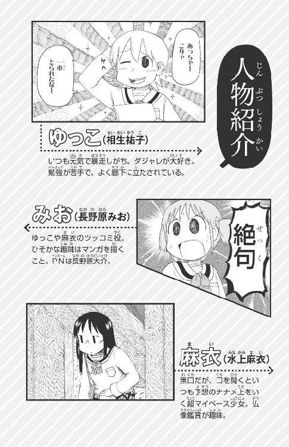
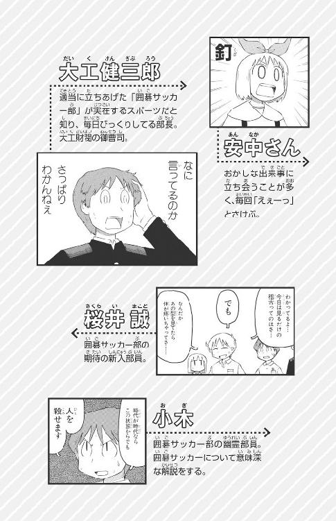

| [あらゐ けいいち & 伊豆 平成] 日常の夏休み | |
| あらゐ けいいち & 伊豆 平成 | |
| 角川書店 (2015) | |
〈保護者のみなさんへ〉
本作品の全部または一部を無断で複製、転載、配信、送信したり、ホームページ上に転載することを禁止します。また、本作品の内容を無断で改変、改ざん等を行うことも禁止します。
本作品購入時にご承諾いただいた規約により、有償・無償にかかわらず本作品を第三者に譲渡することはできません。
本作品を示すサムネイルなどのイメージ画像は、再ダウンロード時に予告なく変更される場合があります。
本作品は縦書きでレイアウトされています。
また、ご覧になるリーディングシステムにより、表示の差が認められることがあります。


そいつは、はるか宇う宙ちゅうの彼方かなたからやってきた──。
だが、やってきてしまったものはしょうがない。
まだ、名な前まえさえわからない「そいつ」は、冷つめたくて暗くらい真しん空くうの宇う宙ちゅう空くう間かんを、どこまでもつき進すすみ、ぐんぐんと地ち球きゅうに近ちかづいていた。
「そいつ」は、宇う宙ちゅう人じんのＵＦＯでもなければエイリアンでもない。
もちろん、怪かい獣じゅう退たい治じの専せん門もん家かでもなければ宇う宙ちゅう戦せん艦かんでもなかった。
「そいつ」は、ただの岩いわのかたまり──空くう気きも水みずもない、岩いわの星ほしだ。
小ちいさな岩いわなら地ち球きゅうにぶつかってもなんの心しん配ぱいない。地じ面めんにとどくまえに空くう気きとのまさつでもえつきてしまう。流ながれ星ぼしとか流りゅう星せい群ぐんとか......。「消きえるまでに願ねがい事ごとを三回かい言いえると願ねがいがかなう」っていう、あれだ。
でも......。
その逆ぎゃくで、とほうもなく大おおきく、妖あやしげな星ほしだった。
えっ？ そんなに大おおきかったら、そのぶん、かなえてくれる願ねがいも大おおきいだろうって？
なるほど、たしかにそうかもしれないけれど......。
妖あやしい星ほしの表ひょう面めんをよくよくながめてみると、空くう気きも水みずもない「そいつ」の岩いわ肌はだに、ぽつんと小ちいさな札ふだが立たっている。
木きのぼうに板いたを打うちつけた小ちいさな看かん板ばんだ。板いたには白しろいペンキがぬられ、赤あかペンキでへたくそな字じが書かいてあった。
それもカタカナで、
いつの間まに札ふだが立たてられたのかわからないが、わざわざ札ふだに書かいて知しらせるぐらいだから、きっとこれがこの星ほしの名な前まえにちがいない。
だから、ここから先さきは「そいつ」ではなくて「妖よう星せいバラス」──と呼よぶことにしよう。
妖よう星せいバラスが、ぐんぐんと近ちかづいていたそのころ、地ち球きゅうは夏なつだった──。
もちろん北きた半はん球きゅうにある日にっ本ぽんが夏なつなだけで、南みなみ半はん球きゅうのオーストラリアなんかは、冬ふゆだったわけだが......。
ともかく、日にっ本ぽんのどこかにある時とき定さだめ市しは、夏なつまっさかりだったのである。
「ちょっと、あんた！」
とつぜん後うしろで声こえがして、安あん中なかさんはビクッと身みぶるいした。
なんだろ？ なにも落おとしてないし、知しってる人ひとの声こえじゃなかったし、きっと、あたしに言いったんじゃないよね......。
「お嬢じょうさん！ あんただよ、あんた！ そこのリボンの女じょ子し高こう生せい！」
「え......えっ？」
ウサギの耳みみみたいな可愛かわいいリボンをピョンとゆらして、安あん中なかさんはふりかえった。
クーラーのきいたコンビニを出でてから、もう五分ふんはたっていた。蒸むし暑あつい空くう気きの中なかで立たち止どまると、とたんに汗あせがにじみ出でてくる。
だれ？ なんの用よう？ せっかく新しん作さくスイーツを買かったから、冷つめたいうちに帰かえって食たべるの、すっごく楽たのしみなのに......。
安あん中なかさんを呼よびとめたのは、占うらない師しのかっこうをしたおじさんだった。
小ちいさなつくえの上うえには、易えき占うらないのぜい竹ちくや水すい晶しょう玉だま、タロットカードに星せい座ざ早はや見み表ひょう。
さらには、食たべかけの大だい福ふくもちにペットボトルのお茶ちゃまでおいて、ちょこんと椅い子すにすわったおじさんが、クワッと目めを見みひらいて、こっちをにらんでいる。
「わ......わたしですか？」
「あたりまえだ、あんたしかおらんだろ！ にぶい子こだな、まったく」
住じゅう宅たく街がいの路ろ地じに、うるさいセミの声こえがひびき、暑あつい夏なつの日ひざしが照てりつけ......。
アスファルトからゆらゆらとかげろうが立たちのぼって......。
こんな暑あつい日ひに、なんで外そとで占うらないなんかしてるの？
駅えき前まえとか商しょう店てん街がいとか、にぎやかな通とおりならまだわかるけど、ここって住じゅう宅たく地ちだよね？
そ、それに......。
「はうっ」
短みじかく息いきをはいて、安あん中なかさんは後あとずさった。
易えきの占うらない師しっぽい和わ服ふくを着きているが、宗そう匠しょう頭ず巾きんからは針はり金がねが五、六本ぽんつき出だし、その先さきには☆型がたのかざりがついている。おじさんが頭あたまを動うごかすたびに☆がゆれ、ギラギラと輝かがやくのだ。
おまけに、机つくえのわきには「超ちょう銀ぎん河が流りゅう占せん星せい術じゅつ家いえ元もと、来きたる！」と書かかれたノボリまで......。
近きん所じょでやっていた流ながしそうめん大たい会かいや、縁えん日にちの射しゃ的てき遊あそびのときと同おなじにおいが......。
そう、安あん中なかさんは、これまでの人じん生せいにおいて、「ちょっとおもしろそう」という軽かるい気き持もちでイベントに参さん加かしては、なにかとひどい目めにあっていた。
だから、今こん回かいもろくでもないことが起おこるのでは......と、そんな気きがしたのだ。
おじさんはグイッと身みを乗のり出だして、リボンの先さきから足あしもとまで、彼かの女じょをじろじろとながめ、うんうんとうなずいた。
「あんた、悪わるい相そうが出でとる。最さい悪あくの運うん勢せいだ」
「さあ、手てを見みせなさい。だまってすわれば、ピカリとあたる！」
「ぴ、ぴかり、ですか？ ぴたりじゃなくて？」
「あたりまえだ。わが超ちょう銀ぎん河が流りゅうはピカリとあたる！ ほらほら、すわってすわって！」
声こえとともに頭あたまの☆がゆれて、びょんびょんとせまってくる。
「あっ！ い、いいえ！ やっぱりいいですっ！」
「ちっともよくない！ これからあんたの運うん勢せいは超ちょう銀ぎん河が級きゅうに悪わるくなる。星ほしのめぐりは最さい悪あくだ、頭ず上じょう注ちゅう意いの相そうが出でとる。ほうっておくと命いのちの危き険けんも......」
「あ～聞きこえない～！ なに～も～き～こ～えな～い～！ ああ～あ～！」
不ふ吉きつな予よ言げんが聞きこえないよう耳みみをふさぎ、でたらめな歌うたを大おお声ごえで歌うたいながら、じりじりと後あとずさる安あん中なかさん。
「まったく、こんなひどい運うん勢せいははじめて見みたのに......」
チッと舌したうちしたおじさんは、あきらめて腰こしを下おろした......と思おもうと、すぐに身みを乗のり出だし、またクワッと目めをむいた。
「そこのあんた！」
安あん中なかさんは「また？」と思おもったが、おじさんの標ひょう的てきは、もう彼かの女じょではなかった。
「奥おくさん！ あんたもお子こさんも悪わるい相そうが出でていますぞ！ 星ほしのめぐりが最さい悪あくで......」
ぴしゃりと断ことわった主しゅ婦ふは、おじさんの頭あたまの上うえでびょんびょん動うごく☆に見みとれていた子こどもの手てをグイッとひっぱり、足あしばやに去さっていく。
だが、おじさんはちっともあきらめていなかった。
あとから来きたプール帰がえりの小しょう学がく生せいたちにまで、「おまえらもだ！ 最さい悪あくの運うん勢せいだぞ！ 占うらなってやるから手てを出だせ、こ、こら！ にげるな～！」とかやっている。
「えぇ～っ！」
安あん中なかさんは、☆をびょんびょんさせてわめく占うらない師しを、あきれて見みつめた。
この人ひと、通とおりかかる人ひとたち全ぜん員いんに「最さい悪あくの運うん勢せい」とか言いってるぅ！
あぶなかった、占うらなってもらわないで正せい解かいだよ......。
ホッと胸むねをなで下おろした彼かの女じょは、また標ひょう的てきにされないよう、そうっとおじさんの視し界かいから離はなれていった。
そのとき、入にゅう道どう雲ぐものうかぶ青あお空ぞらのかなたでキラッとなにかが光ひかったが、安あん中なかさんも超ちょう銀ぎん河が流りゅうの家いえ元もとも、その異い変へんに気きづいてはいなかった。
耳みみの裏うらを、つう～っと伝つたわった汗あせが、ポタッとプリントにしみをつくる。
ゆっこ──相あい生おい祐ゆう子このにぎったシャーペンは、じっとり汗あせばんだまま、ぴくりとも動うごかなかった。
ぽたっ、ぽたっと、プリントにしみがふえていく。
ゆっこは数すう学がくが苦にが手てだった。とくに高こう校こうに入はいってからはさっぱりだ。
ついでに言いえば英えい語ごも苦にが手てだし、国こく語ごだって人ひとにじまんできるほどじゃない。
ていうか、そもそも勉べん強きょうが苦にが手てなのだ。元げん気きなら、ありあまっているのに。
親しん友ゆうのみおちゃんや麻ま衣いちゃんに「みんなで夏なつ休やすみの宿しゅく題だいをやろう！ 数すう学がくのプリントとか、パパッと終おわらせちゃおうよ！」などと、がらにもないことを言いって、みんなをなのちゃんちに集あつめたのはよかったが......。
言いい出だしっぺである彼かの女じょのプリントは、まったく進すすまない。
だいたい、数すう学がくの赤あか城ぎ先せん生せいの言いってること、ぜんぜんわかんないんだよね。
まずい。
これじゃあ、だれかの答こたえを写うつそうとしてみんなを集あつめたみたいじゃん！
あ～そうですとも、そういう気き持もちがあったことはみとめるよ、けど、一問もんぐらいは解とかないと......。
古ふるびた一いっ軒けん家やの東雲研究所なのちゃんちのお茶ちゃの間まは、どこか懐なつかしい感かんじがして、いつもは居い心ごこ地ちがいいんだけど......。
部へ屋やの中なかは空くう気きがねっとりして、動うごかなくても汗あせばんでしまう。
まさか、この猛もう暑しょのなか、なのちゃんやはかせ（それにネコの阪さか本もとさん）が、クーラーなしで暮くらしていたとは！
「本ほん当とうにすみません！ はかせがクーラーをバラバラに分ぶん解かいしちゃって」
ぺこぺこあやまりながら、なのちゃん──東雲しののめなのが、冷つめたいジュースをみんなに配くばって回まわる。
とん、とグラスがおかれるたびに、ゆっこはつい、なのの手て首くびがポロッととれやしないかと気きになってしまう。
なのちゃんは、暑あつくても平へい気きなのかな......と、ゆっこは思おもった。
背せ中なかについた大おおきなゼンマイのネジを見みれば、ひと目めでそうだとわかる。でも、なのがふつうの女じょ子し高こう生せいでいたいと思おもっていることを知しるゆっこたちは、「なのちゃんはなのちゃんだよ」と温あたたかく見み守まもっていた。
ああ暑あつい、なのちゃんの手てがとれて、冷れい風ふうが出でてきたりしないかな......。
じゃなくて！
冷つめたいジュースで一ひと息いきついたゆっこは、さりげなく言いった。
「ねえねえ、なのちゃん、問とい五の答こたえっていくつになった？」
自じ分ぶんでは問とい一さえ解といてないゆっこでも、見み栄えというものがある。
だからこれは、「答こたえがあってるか気きになったのでたしかめる」ふりをして答こたえを聞きき出だす──という高こう等とうテクニックなのだ。
まじめで親しん切せつななのに聞きくのも重じゅう要ようポイントだ。
麻ま衣いちゃんに聞きいても、強きょう烈れつなボケが返かえってくるだろうし、みおちゃんだと「たまには自じ分ぶんで考かんがえなさいよ」って言いわれちゃうからね！
「ええっと......」
なのが向むかいにすわって、自じ分ぶんのプリントを手てにとった。
「うんうん！」
と、答こたえを書かき写うつす気きまんまんで、ゆっこがちゃぶ台だいに身みを乗のり出だす。
ロボットだけど、成せい績せきまで人にん間げん並なみのなのが、照てれ笑わらいをうかべて言いった。
「あ～。私わたしもわかんなくてさ......その、なんか、ごめん......」
外そとの路ろ地じで、だれかが「あんたの運うん勢せいも悪わるい！ 超ちょう銀ぎん河が級きゅうに悪わるいぞ！」とさけんでる声こえが、かすかに聞きこえてくる......。
ううん、これも暑あつさのせいよっ！ なにもかも、この猛もう暑しょが悪わるいんだ！
「そうそう。あのさ、『猛もう暑しょは犬いぬのしわざ』って噂うわさ、聞きいたことある？」
そのとたん、高こう校こう生せいに交まじって、ちゃぶ台だいのはしっこでサメの絵えを描かいていた、白はく衣いの少しょう女じょ──はかせが、ハッと息いきをのむ。
はかせは小ちいさな子こどもだが、ロボットのなのを作つくったほどの天てん才さいで、ある意い味み「こわいもの知しらず」だ。
でも小ちいさな子こどもだから、やっぱり暗くらいところやオバケや犬いぬなんかは、ちょっと......いや、かなり苦にが手てなのだ。
はかせは、三さん角かっ形けいのサメの背せびれをぐいぐいと描かきながら言いった。
「らしいんだよねぇ」
「ふーん。じゃあじゃあ『うわさ』ってなに？」
「そ、そうきたか......」
大だい好すきなゆっこと話はなしたくて、なんとなく聞きいてみただけのはかせは、適てき当とうに「うん、そうきました」とうなずいて、すぐにお絵えかきにもどってしまった。
「そうきました──ってかぁ、こりゃはかせは手てきびしいね、あはははは」
静しずまりかえった茶ちゃの間まに、ゆっこの笑わらいがむなしく響ひびく。
なのは困こまったような笑えみをうかべたが、麻ま衣いもみおも顔かおを上あげもせず勉べん強きょうしていた。
いや、麻ま衣いのほうは、プリントじゃない紙かみになにやら書かいているから、もしかしたら「高こう度どなボケ」をかましているのかもしれなかったが。
今いまの話わ題だい、寒さむかった？ こんなにむし暑あついのに？
数すう学がくの問もん題だいは解とけないのに、身体からだはとけそうなくらい暑あつい......。
「そ、そうだ！ せっかくの夏なつ休やすみだし、みんなでどっかへ行いこうよ！」
「ちがうって！ なのちゃんちじゃなくて、もっと遠とおくにだよ」
「んも～。ゆっこ、少すこしはまじめに勉べん強きょうしなよ～。だいたい、どこ行いくっていうの？」
みおちゃん──長なが野の原はらみおが、片かた手てで自じ分ぶんの肩かたをとんとんたたきながら顔かおを上あげた。
彼かの女じょはとっくにプリントを解とき終おわって、ノートに趣しゅ味みのマンガかなんかを描かいている。まじめというより、勉べん強きょうが苦くにならないタイプなのだ。
「キャンプ、さんざんだったじゃん！」
このあいだ三人にんで行いったキャンプは、カレーをぶちまけるわ、飯はんごうをひっくり返かえすわで、夕ゆう飯はん抜ぬき。すきっぱらをかかえてテントで寝ねただけだったのだ。ただ一人ひとり、ハンバーガーを持もってきて食たべていた麻ま衣いをのぞいては......。
そうだったかな？ というように、麻ま衣いがこくびをかしげる。
「みおちゃんとあたしは、さんざんだったんだよ！」
「だからって今いまから急きゅうに遠とおく行いくとかは、むりでしょ」
ウッドキューブでまとめた短みじかめのツインテールを、シャーペンの先さきでくるくるかきまぜながら、みおがあきれたように言いった。
「な、なにさ、こっちが軽かるくふった話わ題だいを、二人ふたりして全ぜん力りょくで否ひ定ていしなくてもいいじゃん！ あたしはぁ、ただ遠とおくへ行いきたいんだよぉ」
もはや、自じ分ぶんでもよくわからない意い地じを張はり、半はんべそをかくゆっこ──。
「あ、あの、けんかしないでください」
「ねえねえ、『とおく』にいきたいの？」
話はなしに交まじりたいのか、はかせがきらきらとした目めで見み上あげている。
「じゃあ、いけるけど！」
「へっ？」
「いっぱいとおくにいけるけど！」
小ちいさな子このおかしなもの言いいに、おもわず顔かおを見み合あわせたゆっこたちは、声こえをそろえて聞きき返かえした。
「ほんとだけど！」
すっくと立たったはかせが、ぶかぶかの白はく衣いの胸むねをドンとたたいた。
「もしかして私わたしたち......もう帰かえったほうがいいの？」
遠とお回まわしに邪じゃ魔まだから帰かえれって言いってる？ と気きにして、みおが聞きくと、はかせはぶんぶんと首くびをふった。
「ち、ちょっと、はかせ......」
なのが止とめる間まもなく、はかせは茶ちゃの間まをとび出だしていった。
ゆっこたちは、のんきに「いやあ、子こどもは無む邪じゃ気きでいいねぇ～」などと笑わらっているが、なにしろ、いたずら大だい好すきなはかせのことだ。もしかしたらなにかの発はつ明めいで「ビヨ～ン！」とか「ドカーン！」とか「バシュ～！」とか、なのの大たい切せつな友ともだちを、ふっ飛とばしてしまうかもしれない。
自じ分ぶんも何なん度どか、この研けん究きゅう所じょから打うち上あげられている。ふつうの人ひとに見みられたいなのとしては認みとめたくないが、あれはロボだから平へい気きだったのであって、相あい生おいさんたちがそんなことになったら......。
彼かの女じょの心しん配ぱいをよそに、「よいしょ、よいしょ」と、かけ声ごえとともに、はかせがろう下かをもどってきた。
小ちいさな子こには手てにあまる大おおきさの木き箱ばこを、小こわきにかかえ、もう一いっ方ぽうの手てでは、黒くろネコをぶら下さげている。
赤あかいスカーフを首くびに巻まいたネコは首くび根ねっこをつかまれ、手て足あしをじたばたさせていた。
じゅうたんの上うえに木き箱ばこを置おくと、はかせは得とく意いげにせきばらいをした。
黒くろネコは抵てい抗こうをあきらめ、だらんと力ちからをぬいてぶらさがっている。
ほかには聞きこえないくらいの小ちいさな声こえで「おいガキ！ なにをする気きだ!?」と文もん句くを言いってはいたのだが......。
東雲しののめ研けん究きゅう所じょの黒くろネコ──阪さか本もとさんは、はかせの発はつ明めいしたスカーフのおかげで、人ひとの言こと葉ばが話はなせる。しかも、この家いえでは最さい年ねん長ちょうの大人おとなだったから、「なの娘の友ともだちの前まえでは、はガかせキと話はなさないほうがいいよな」ぐらいのことは心こころ得えていた。
「うん。いけるけど」
少すこしムッとしたはかせは、じゅうたんに隠かくれていたボタンをカチッとふんだ。
大おおきな音おとがしたかと思おもうと、後うしろにある、ごくふつうの壁かべから、いきなり大おおきな箱はこがあらわれた。
大人おとなが楽らくに立たって入はいれるぐらいの、たて長ながの箱はこ。
正しょう面めんには衣い装しょうダンスみたいな扉とびらがついている。
これには、ゆっこたちも「ほお～っ！」と驚おどろいた。なのだけは、「まさか、箱はこごと発はっ射しゃ？」と一人ひとりでハラハラしていたが。
「お、おいこらガキ、やめろ！ せまいっ、せまいぞっ！」
文もん句くは小こ声ごえで──。阪さか本もとさんはりっぱな大人おとななのだ。でも、やっぱりネコなのである。はじめは嫌いやがったものの、身体からだが箱はこにぴったりはまっていると、なんとなく居い心ごこ地ちよくなってきてしまう。
「あ、なんか、いい感かんじのせまさじゃないか......くそっ、こんなことで......」
気きがつくと、阪さか本もとさんののどはゴロゴロと鳴なっていた。
「ふた、しめます」と、はかせ。
木き箱ばこのふたをパタンと閉しめると、阪さか本もとさんの姿すがたが見みえなくなる。
「ふむふむ、つぎは？」
と、ゆっこがのぞきこむ。
「中なかには........................はい、阪さか本もとがいます！」
ふたを開あけると、すっかりくつろいでいる阪さか本もとさんが見みえた。
と、みんなが心こころの中なかでツッコんだところで、はかせがふたをする。
「あ、なんだっけ、これってなんか有ゆう名めいな実じっ験けんだよね」
みおがつぶやいた。
前まえに読よんだＳＦマンガに出でてきたような気きがしたのだ。もっとも、そのマンガの説せつ明めいを読よんでも、意い味みはあまりよくわからなかったのだが。
「これは『中なかにいるかもしれないし、いないかもしれない』箱はこかもしれないやつです」
それを聞きいて、なのは「な～んだ、手て品じなでしたかぁ」と胸むねをなで下おろした。
はかせは、小ちいさい箱はこをそのままにして、後うしろを向むくと、「よいしょ！」と大おおきな箱はこの扉とびらを開ひらく。中なかはからっぽで、がらんとした空くう間かんが広ひろがっていた。
「はいはい。手て品じなで消けして、『遠とおくへ行いったでしょ～』ってオチね」
「かわいい」
みおはまだぶつぶつ言いっていたが、三人にんとも、はかせの遊あそびにつき合あって、大おおきな箱はこに入はいった。
洋よう服ふく屋やの試し着ちゃく室しつぐらいの大おおきさなので、三人にんだと少すこしきついが、入はいれないことはない。ただでさえ暑あついので、箱はこの中なかはまるでサウナのようだった。
最さい初しょに入はいったゆっこは、みおと麻ま衣いに両りょう脇わきから背せ中なかを押おされて箱はこにへばりつき、汗あせで肌はだが壁かべにくっついて、ふり向むくこともできない。
「暑あつくて死しぬ～！ 早はやく！ なんかするなら早はやくやって！」
「......（むぎゅう）」
（うおおおっ、な、なんだ？ オレは生いきてるのか？ 死しんでるのか？ どっちなんだ？ いや、なんかもう、自じ分ぶんが存そん在ざいしているかいないかもはっきりしないぞ......ううっ、苦くるしい！ あのガキめっ、なんだこりゃ!? グググッ、ギニャ～ッ！）
どんなにさけんでも、もがいても、声こえは箱はこの外そとには届とどかない。というより、ふたを開あけない限かぎり、阪さか本もとさんが本ほん当とうにじたばたしているのかどうかさえ、はっきりしないのだ。
「わかった、これシュレディンガーだ」
「どうしたの、みおちゃん？」と、ゆっこ。
「箱はこを開あけるまでは、生いきてるか死しんでるかは、だれにもわからないっていう実じっ験けんだよ。で、出でよう......」
あわてて箱はこから出でようとするみおを、麻ま衣いがグッと引ひきとめる。
「......」
「だだだだってさ、もしシュレディンガーなら......」
バタン──。
「すれ......？」
「シュレ」
「す......？」
「シュ」
「す......すれ......しゆ......しゆれでん......」
くちびるをとがらせて一いっ生しょう懸けん命めいのはかせを見みて、なのはプッとふき出だした。
おかしくって、ひとしきりけらけらと笑わらい転ころげる、はかせとなの。
その間かん、ふたの閉しまった大だい小しょう二つの箱はこからは、物もの音おとひとつしなかった。
「じゃ、つづけます！」と、はかせ。
シュレディンガーとかじゃなくて、やっぱりただの手て品じななんだ......と、なのが拍はく手しゅすると、はかせは「てへっ」と照てれながら小ちいさな箱はこを開あけた。
「はい、きえた～！」
この瞬しゅん間かん、阪さか本もとさんが本ほん当とうにこの世よから消きえてしまっているとは思おもいもせず、なのが素す直なおに驚おどろくと、はかせは得とく意いげにふんぞり返かえった。
そう言いいながらはかせは、大おおきな箱はこの扉とびらを開あけた。
「......いや、だからさ、『シュレディンガーの猫ねこ』ってのは有ゆう名めいな思し考こう実じっ験けんで、箱はこを開あけるまでわからなくなるのは『中なかの猫ねこが生いきてるか死しんでるか』であって、姿すがたが消きえるんじゃなくて......ちょっと、ゆっこも麻ま衣いちゃんも聞きいてる？」
「......はい、まだいます！」
えっ？ えっ？
もしかして、相あい生おいさんたちも消きえちゃうの......？
ドキドキして、なのが見み守まもっていると、はかせは、また小ちいさい方ほうの箱はこを開あけた。
ふたが開ひらくなり、「ギニャ～！」と悲ひ鳴めいを上あげて、阪さか本もとさんが飛とび出だしてきた。
床ゆかに転ころがって、恐きょう怖ふにふるえ、ぜいぜいと肩かたで息いきをしている。
「はあはあはあ......な、なにをした？ あのまま消きえてなくなるかと思おもったぞ......うっうううっ......」
大人おとなだけど目めに涙なみだをため、はかせをにらみつける阪さか本もとさん。
なのが抱だきかかえると、黒くろネコはぐったりと気きを失うしなった。
「阪さか本もとのおかげで、準じゅん備びできました」と、はかせ。
「えっ？」
なのがそう思おもったとき、はかせが大おおきな箱はこの扉とびらを開あけた。
ゆっこたち三人にんの姿すがたは、あとかたもなく消きえ失うせていた。
はかせが手て品じな師しのように気き取どってお辞じ儀ぎをしてみせた。
「はい、おしまい！」
カチッとスイッチをふむ音おとがして、大おおきな箱はこが壁かべの中なかに収しゅう納のうされる。
茶ちゃの間まは、なにごともなかったかのように平へい穏おんをとりもどした。
「おしまい？ は、はかせ、まだ途と中ちゅうですよ。だって、みなさんが消きえたままじゃないですか！」
「そのとおりです」
ズコー
なのが、おもいっきりずっこける。
「とおくです」
「遠とおくってどこです!? 外がい国こくとか!? どうやって帰かえってくるんですか!?」
「わかんないです」
はかせは、ちゃぶ台だいに残のこった三枚まいのプリントをながめて、ひと仕し事ごと終おえた満まん足ぞくげな顔かおでうなずいた。
そして、麻ま衣いが描かいていたサメのスケッチをちゃぶ台だいに広ひろげると、新あたらしい画が用よう紙しにサメの絵えを描かき写うつしはじめる。
どうしよう！ 相あい生おいさんたちは、どこへ行いっちゃったの？ どうしたらいいの？
クレヨンを持もった手てを止とめ、はかせは天てん井じょうをあおいだ。
西にし日びのさしはじめた茶ちゃの間まには、ヒグラシの鳴なき声ごえがひびいていた。
河原かわらの木こかげに腰こしを下おろし、ペットボトルを垂すい直ちょくにしてスポーツドリンクをがぶ飲のみしていた田た中なかは、奇き妙みょうなものが空そらにうかんでいるのに気きづいた。
その上うえ、驚おどろいたひょうしに、飲のみものが鼻はなの穴あなに、おもいっきり逆ぎゃく流りゅうした。
「ブホッ！ ガハッ！ ゲヘッ！」
ピュッ、ピュッ。
せきこむたびに、鼻はなの穴あなからスポーツドリンクが飛とび出だす。
彼かれの個こ性せいを象しょう徴ちょうする巨きょ大だいなアフロヘアが、ゆっさゆっさとゆれる。
となりにいるクラスメートの中なか之の条じょうに、この驚おどろきを伝つたえたかったのだ。
「ガハッ......なんか......ゲホッ......空そらに！」
「なんだよ、また『ＵＦＯが飛とんでる』とか、非ひ科か学がく的てきなことを言いう気きかい？」
アフロの田た中なかに対たいし、髪かみの毛けが一本ぽんもないスキンヘッドの中なか之の条じょうは、笑わらいながら、せきこんでいる友ゆう人じんの背せ中なかをたたいてやった。
田た中なかも中なか之の条じょうも、ゆっこたちと同おなじクラス──時とき定さだめ高こう校こうの一年ねん生せいだ。
このくそ暑あついなか、二人ふたりは「ＵＦＯや幽ゆう霊れいはいるかいないか？」について、近きん所じょにある天てん満まん宮ぐうの和お尚しょうさんに、意い見けんを聞ききにいった帰かえりだった。
ちなみに、田た中なかは「いる派は」で中なか之の条じょうは「いない派は」だ。
二人ふたりは気きの合あう親しん友ゆう同どう士しだが、この点てんだけはゆずれない。
幽ゆう霊れいなんて、高こう校こう生せいの自じ由ゆう研けん究きゅうのテーマとしてはどうかと思おもう。
それなのに、和お尚しょうには二人ふたりの熱ねつ意いはまったく伝つたわらなかった。
それどころか、顔かおを見みるなり「出でていけ！ この悪あく霊りょうども！」とどなられ、ホウキでひっぱたかれた。
実じつは、中なか之の条じょうははじめから寺てらに行いくのは気きが進すすまなかった。
田た中なかが「専せん門もん家かの意い見けんも大だい事じだ」と言いうから、しかたなくついていったのだが......。
中なか之の条じょうは夏なつ休やすみより前まえに、和お尚しょうに霊れいのことを聞ききに行いき、ちょっとした行いき違ちがいから大おお暴あばれして怒おこらせてしまっていた。
髪かみ型がたがモヒカン刈がりからスキンヘッドに変かわったことで気きづかれないかも......と思おもったのだが、考かんがえが甘あまかった。和お尚しょうは意い外がいに記き憶おく力りょくがあったのだ。
──で、二人ふたりとも頭あたまをコブだらけにして逃にげまわり、河原かわらでひと休やすみしていたのだった。
田た中なかが、なにか不ふ思し議ぎなものを目もく撃げきしたのだった。
中なか之の条じょうは苦く笑しょうしながら空そらを見み上あげた。
田た中なかは川かわを背せにして、川かわ沿ぞいの土ど手ての上うえを指さしている。
「あっ！」
ポツンと、小ちいさな星ほしが空そらにうかんでいるではないか。
だが、月つきは白しろっぽく見みえることがある。あれみたいな小ちいさな白しろい星ほしが......。
「たしかに変へんだね。あんな星ほし、前まえからあったっけ......？」
ずっと下したの、土ど手ての切きれ目めあたりからふわ～っと立たちのぼってきたものだった。
透すけていて幽ゆう霊れいのようだが、三人にんの女おんなの子こが、暑あつ苦くるしそうにせまいところでスクラムを組くんでいるようにも見みえる。
「はあ？」
中なか之の条じょうが目め線せんを上じょう空くうから下したへとずらす。
すると、彼かれの視し界かいには、星ほしではなく☆が飛とびこんできた。びょんびょんといそがしく動うごき回まわる☆だ。それも五、六個こはある──。
だが、中なか之の条じょうの視し界かいは、相あい変かわらず☆にさえぎられていた。
「ぼんやり？ むしろ、びょんびょんだ」
「はあ？ あれはどうみても女じょ子し......待まてよ、あれはうちのクラスの......」
いつの間まにか、二人ふたりの足あしもとにだれかがしゃがみこんでいた。
その人ひとが頭あたまにつけている☆が、中なか之の条じょうの視し界かいをさえぎっていたのだ。
もちろん、あの超ちょう銀ぎん河が流りゅう占せん星せい術じゅつの家いえ元もとに決きまっているが、二人ふたりはそんなことは知しらない。
小しょう学がく生せいに逃にげられた占うらない師しが、中なか之の条じょうの手てをとって虫むしメガネでのぞきこんでいた。
「坊ぼう主ず、おぬしの運うん勢せいは、これまた超ちょう銀ぎん河が級きゅうに最さい悪あくだぞ。このままだと......」
「ストップ！」
いきなり占うらないはじめた家いえ元もとを、中なか之の条じょうは強つよい口く調ちょうで押おしとどめた。
なにしろ彼かれは、幽ゆう霊れいだって否ひ定てい派はなのだから。
「占うらないなんて非ひ科か学がく的てきなもの、ぼくは信しんじません！」
「ぶ、無ぶ礼れいな！ 超ちょう銀ぎん河が流りゅう占せん星せい術じゅつは理り科か年ねん表ぴょうと統とう計けい学がくに基もとづいた......」
「ちがう！ 運うん命めいなんてだれかに指さし図ずされるものじゃない。自みずからの力ちからで切きり開ひらくものなんだ！」
心こころからのさけびとともに、中なか之の条じょうは、ぶん！ と手てをふると、占うらない師しの頭あたまについた☆を、ひとつ残のこらずなぎはらった。
「あっ、な、なにをするっ！」
針はり金がねをつけて飛とんでいくすがたは、まるで流ながれ星ぼしのようだった。
流ながれ星ぼしを追おった占うらない師しは、そのまま川かわに飛とびこみ、☆といっしょに川かわを流ながれていく。
「やれやれ、あぶないところだった」
ふうっと息いきをついて、中なか之の条じょうはひたいの汗あせをぬぐった。
あらためて彼かれが聞きくと、田た中なかはゆっくりと首くびを横よこにふった。
「いや、もういいんだ。さっきのは、おそらく俺おれの気きのせいだ。暑あつさでおかしくなってたのさ」
そう、あれは絶ぜっ対たいに幽ゆう霊れいなんかじゃない......と、田た中なかは思おもった。
うすれていく人ひと影かげが「うちのクラスの女じょ子しだった」なんて、言いえるわけがない。
それも、相あい生おい祐ゆう子こと長なが野の原はらみお、それに水みな上かみ麻ま衣いの三人にんが、おかしなスクラムを組くんで、空そらを飛とんでいたなんて......。
気きがつくと、ゆっこはゴツゴツした岩いわの平へい原げんに立たっていた。
三人にんして岩いわと砂すなだけの平へい原げんに立たって、真まっ黒くろな空そらを見み上あげていたのだ。
ここまで読よんできた人ひとなら、ここがどこかとっくに気きづいているだろう。そう、お察さっしの通とおり、ここは妖よう星せいバラスだ──。
だから、もうしばらく知しらないふりをして見み守まもっていてほしい。
もし「そうか、まだ『バラスのことをばらすな』ってことか」と思おもった人ひとがいたら、それはダジャレという貴き重ちょうな才さい能のうだ。大だい事じにしてほしい。今こん後ご、きっと役やくに立たつはずだから。
まあ、それはともかく──。
本ほんを読よみながら、あなたが「ゆっこ、そこはバラスだよ！」と教おしえても、今いまの三人にんには聞きこえない。
なぜなら、ゆっこたちがいるのは、見みわたすかぎり岩いわと砂すなしかない巨きょ大だいな妖よう星せいバラスの大だい地ち。ここには草くさ木き一いっ本ぽん生はえていない。それどころか、水みずもなければ空くう気きもない......そう、空くう気きがないのだ。
空くう気きがないと音おとは伝つたわらない。だから、いくらあなたが本ほんに向むかって声こえをかけても、ゆっこたちには届とどかないのだ。
三人にんは「うぐぐっ！」と口くちを押おさえ、地じ面めんをのたうち回まわっていた。
麻ま衣いは「空くう気きがなくても平へい気きなふり」をして、ゆっくりとひざまずいただけだったが、やっぱり顔かお色いろは真まっ青さおだ。
空くう気きがないとどのくらい苦くるしいかは、少すこし息いきを止とめてみればわかる。
いくぞ、せ～の！
.......................................。
.................................。
.........。
......はい、やめ！
どうかな？ ゆっこたちは、この何なん倍ばいも苦くるしかったのだ。
真しん空くうの宇う宙ちゅうならそれどころじゃない、あっという間まに凍こおったり、はれつしたり、なにかもっと大たい変へんなことになるはずだ──そう思おもった人ひともいるかもしれない。
たしかに人にん間げんは、宇う宙ちゅう服ふくなしでは、真しん空くうの宇う宙ちゅうでは一分ぷん間かんも生いきてはいられない。
「......」
三人にんがほぼ同どう時じに、肺はいの中なかの空くう気きをしぼりだしてさけんだとたん──。
「あれっ？」
バラスの表ひょう面めんは、一いっ瞬しゅんのうちに新しん鮮せんな空くう気きでおおわれていたのだ。
「ここ、どこだろ？」
「とおく......」
東雲しののめ研けん究きゅう所じょはサウナみたいに暑あつかったが、ここは暑あつくもなく寒さむくもない。風かぜもなく、空くう気きは作つくりたてのように新しん鮮せんだった。
よく知しらないけど、きっと外がい国こくには空くう気きがないとこもあるんだよね──ぐらいのゆるさで、ゆっこが言いった。
「そうかも」と、麻ま衣いはボケて答こたえたのだが、ゆっこは気きづかない。
「うわ～っ。私わたし、英えい語ごとかぜんぜん自じ信しんないよ～。あ、麻ま衣いちゃんは帰き国こく子し女じょだからいけるよね、安あん心しんだよね」
「ん......」
と、のんきに話はなしている二人ふたりの後うしろで、みおが「うぎゃあああああっ！」と悲ひ鳴めいを上あげた。
「ん？ どしたの、みおちゃん？」
ゆっこがふり向むくと、みおは空そらを見み上あげて白しろ目めをむいている。
「ちき......ちきちきちきちきちき......」
「ちきちき......ちきゅちきゅ......」
意い味み不ふ明めいの声こえとともに、あんぐりと開ひらいたみおの口くちからフワ～ッと白しろい煙けむりのようなものが立たちのぼった。
「みおちゃん、しっかりしろ～っ！」
ゆっこの脳のう天てんチョップで、ぐるんとみおの黒くろ目めがもどる。
いったいなにを見みたんだろう......と空そらをあおいだゆっこは、「あっ！」と声こえを上あげた（麻ま衣いも地じ味みにハッと驚おどろいていた）。
空くう気きがなかったときとちがって、雲くもひとつない明あかるい青あお空ぞら──。
お昼ひるごろなのか、空そら高たかくに輝かがやいている太たい陽よう──。
そして──。
「そうだよ！ あれ地ち球きゅうだよ！ 大だい問もん題だいだよっ!!」
みおが青あおい顔かおでさけんだが、ゆっこは目めをキラキラさせていた。
「すご～い、きれい～。まさに宇う宙ちゅうにきらめくエメラルド！ 宇う宙ちゅうにたったひとつのオアシス！ 宇う宙ちゅう船せん地ち球きゅう号ごうを、生なまで見みられるなんて感かん動どうだね！ てっきり宇う宙ちゅうに行いかなきゃ見みられないと思おもってたのに、地ち球きゅうから地ち球きゅうが見みられるなんて。外がい国こくってすごいね～」
「なによ、みおちゃん。いきなりバカはないでしょ。なんか根こん拠きょでもあるの？」
青あおい空そらにうかんでいる惑わく星せいは、少すこし白しろっぽく光ひかってはいたが、はっきり地ち球きゅうだとわかる。空くう気きが澄すんでいるせいか、ちょっと目めをこらせば日にっ本ぽんの形かたちまでわかりそうだ。
「自じ分ぶんが地ち球きゅうにいて、空そらに地ち球きゅうが見みえるわけないでしょ！ だからここは地ち球きゅうじゃないんだよ！」
「それって......つまり......」
みおの放はなった論ろん理り的てきな事じ実じつが、じわじわとゆっこの脳のうみそにしみこんでいく。
（月つきには空くう気きがない）と、麻ま衣いが心こころの中なかでつっこむ。
そもそも、月つきだって地ち球きゅうのそばにうっすらと見みえているのだ。
「と、とおくって......まさか、そんなにめちゃめちゃ遠とおくに？」
「ゆっこが変へんなこと言いいだしたからだよ！ どうすんの!? どうやって帰かえるの!?」
「ま、待まってよ、いくらなんでも、こんなことになるとは......」
目めの前まえで、みおの木もく製せいの髪かみどめがゆれている......ウッドキューブ!?
ゆっこは授じゅ業ぎょう中ちゅうに居い眠ねむりして、よく「フェイ王おう国こく」の夢ゆめを見みる。
その夢ゆめに出でてくるフェイ王おう国こくという謎なぞの国くにでは、このウッドキューブが古こ代だい兵へい器きの力ちからを手てに入いれるために必ひつ要ような伝でん説せつの宝たからなのだ。夢ゆめなのに、やけに設せっ定ていが細こまかいし、毎まい回かいの登とう場じょう人じん物ぶつもリアルなので、いつも現げん実じつと区く別べつがつかなくなって大おお声ごえでさけんで飛とび起おき、ろう下かに立たたされるはめになる。
もしかしたら、今いまは、その夢ゆめの続つづきを見みているんじゃないの？
だったら、みおちゃんは「古こ代だい兵へい器きの力ちからを持もつ凶きょう暴ぼう女おんな」と化かしているはず......。
ていうか、もしこれが夢ゆめなら、目めを覚さませば、なのちゃんちにもどれるのでは......？
気きがつくとゆっこは、みおのウッドキューブを両りょう手てでむんずとつかんでいた。
「ちょ、ちょっと、なにすん──」
この不ふ条じょう理りな髪かみのとめかたといい、やっぱり夢ゆめっぽい気きが......。
たばねた髪かみの毛けを根ね元もとからまとめてひっぱられ、ジタバタするみお。もちろん、これは夢ゆめではないのだから、痛いたいに決きまっている。
「いだだだだだだだ！ ええい、やめんかいっ！」
ばしっ！
ゆっこの手てを払はらいのけ、みおはフーッとうなり声ごえを上あげた。
「なにすんのよ！」
「ごめんごめん、でも、よかった夢ゆめじゃなくて。本ほん物もののみおちゃんかぁ」
「いっそ夢ゆめだったほうが痛いたくなかったわっ！ まったくもう！」
「だから、ごめんごめん」
ゆっこがへらへらと謝あやまっても、みおの焦あせりと怒いかりはおさまらなかった。
「だ～から！ これがごめんですむ状じょう況きょうかって言いってんの！ ここどこなのよ！ ゆっこのバカ！」
「バラス......」
「私わたしもこうなるとは知しらなかったのに、バカはないでしょ、バカは！」
「バカじゃなきゃ、ここがどこか教おしえてみなよ。ほら、言いってよ！」
「うぐ......ぐぐっ！」
「だから、バラス......」
「やっぱバカじゃん！ ゆっこのバカ！」
「みおちゃんのわからずや！」
「そうよ！ さっきから合あい間ま合あい間まにバカスバカスって！」
「だから、ここ。バラス......」
にらみつける二人ふたりの後うしろを指ゆびさして、麻ま衣いが「フッ」と笑わらった。
えっ？ 驚おどろいたゆっこたちが、ケンカを忘わすれてふりかえる。
「なにこれ？」
岩いわと砂すなだけと思おもっていた平へい原げんに、小ちいさな札ふだが立たっていた。いつの間まに現あらわれたのか、それともずっとあったのに気きづかなかったのか......。
ただひとつたしかなのは、立たて札ふだに書かかれた文も字じが、ゆっことみおにも読よめたということだ。どこともしれない星ほしの札ふだなのに、へたくそな字じで「妖よう星せいバラス」と書かいてあったから......。
「バラス？」と、みお。
そうかぁ、ここ、バラスなんだ。なんだ、バラスか......。
いや、バラスがなにかはさっぱりわからないのだが、名な前まえがわかると、少すこしは安あん心しんできるし、ここがどこかで言いい争あらそうのはバカバカしくなってくる。
ゆっことみおは顔かおを見み合あわせてプーッとふきだすと、すぐに仲なか直なおりして、ばしばしと肩かたをたたき合あい、ゲラゲラ笑わらいだした。
「そう」
妖よう星せいバラスとはなんなのかまでは、さすがの麻ま衣いも知しらなかったが、ここがバラスなのだけはたしかだった。
この星ほしに空くう気きが現あらわれてホッとしたあと、ゆっこが「ここ、どこだろ？」と口くちにしたときのことを......。
あの立たて札ふだは、ゆっこの質しつ問もんに答こたえるかのように、岩いわだらけの地じ面めんにひっそりと現あらわれたのだ。
「まあいいや、ここがバラスなのはわかったけどさ......」
さんざん笑わらい転ころげたゆっこが、まだヒーヒー言いいながら立たちあがる。
「まず、どうしたらいい？」
パニックはおさまった。こうなっては、だれのせいだとわめいても意い味みがない。
意い味みはないが......。このままボーッとしているわけにもいかなかった。
「ここ、なんにもないもんね～」と、ゆっこ。
そうは言いったものの、帰かえる方ほう法ほうなんてみおにも見けん当とうがつかない。
ここは宇う宙ちゅうの彼方かなた──あの月つきよりも遠とおくなのだ。
こういうときは、まずは野や外がい生せい活かつのスキル（技ぎ能のう）がものをいう──と、マンガなんかではよくみかけるよね。そもそも、そんなスキルがないけど......。
腕うで組ぐみしたみおは、知しったふうな顔かおで言いってみた。
「ふむふむ。さすがみおちゃん」
まったく、この娘こたちに絶ぜつ望ぼうという文も字じはないのだろうか？
「見みたところ岩いわと砂すなしかないみたいね。さっきまで空くう気きもなかったくらいだし、生いきるために必ひつ要ようなものを探さがさないと......」
「そっか！ じゃ、まずは水みずを探さがさなきゃ。なんか、のどかわいてきたし」
のどをゴクッとならして二人ふたりがサバイバルの決けつ意いを固かためたとき──。
ズズズズーッとストローで残のこり少すくない液えき体たいをすい上あげる音おとと、グラスの中なかで氷こおりの転ころがる澄すんだ音おとがした。
彼かの女じょが手てにしているのは、冷ひえてくもったグラスだった。底そこのほうに残のこっている液えき体たいは、麦むぎ茶ちゃだろうか。残のこっている氷こおりは冷れい凍とう庫こから出だしたばかりのように角かく張ばっている。
「な、なに、それ？」
「こうやって──」
平へい然ぜんと答こたえた麻ま衣いが、グラスをかかげて言いった。
ズズーッと、ストローでおいしそうに麦むぎ茶ちゃを飲のむ麻ま衣い。
と、目めの前まえにいきなり一本ぽんの缶かんジュースが現あらわれた。
すばやく空くう中ちゅうでキャッチすると、缶かんはひんやりと冷つめたかった。
「か～っ、うまいっ！ 言いえばなんでも出でてくるのか。こりゃ夢ゆめの星ほしだね」
「そっか......最さい初しょに『空くう気き！』って言いったから、空くう気きが出でたのか」
「たぶん」
じゃ、あぶなかったじゃん......。
もし『空くう気き！』じゃなくて、『苦くるしい！』とか言いってたら......？
「なんでもありなのかな。じゃあ『ハンバーガー！』」
ひとり悩なやんでいるみおの横よこで、ゆっこがのんきに声こえを上あげる。
彼かの女じょの手ての上うえに、パッとハンバーガーが現あらわれた。
ファストフード「大だい工くバーガー」の、百円えんで買かえるシンプルなバーガーだ。ご丁てい寧ねいに、包つつみ紙がみには「大だい工くバーガー」のロゴもばっちり入はいっている。
「しまった～。どうせならもっと豪ごう勢せいに、ダブルチーズバーガーとか言いえばよかった」
どういう仕し組くみかはわからないが、今いまみたいな言いい方かたをしたときは、ダブルチーズバーガーが現あらわれてしまうことはないらしい。
「ダブルチーズバーガー。ポテトとスムージーのセットで」
すると、彼かの女じょが言いったままのセットがトレイにのって現あらわれた。
バーガーもフライドポテトもできたての熱あつ々あつで、湯ゆ気げが上あがっている。
「あ、セットって手てもあったか～。でも、お店みせで食たべると、このジュースとの組くみ合あわせは楽たのしめないんだよね」
などと言いいつつ、平へい然ぜんと食たべ続つづけるゆっこと麻ま衣い。
「ふ、二人ふたりとも順じゅん応のうすんの早はやすぎだって！」
みおがにらみつけると、二人ふたりはバーガーをほおばったまま「ん？」とふり返かえる。
「あやしいと思おもわないの？ この星ほし、なんかおかしいって！」
「だって、みおちゃん言いったじゃん。生いきるために必ひつ要ようなものを探さがさないと──って」
「ま、まあね」
「だったら、これがバラスでのサバイバルなんだよ。それに、おいしいし」
「うっ......」
ゆっこに理り屈くつで言いい負まかされ、言こと葉ばにつまるみお。
マイペースな麻ま衣いが言いい終おわる前まえに、見み慣なれた時とき定さだめ市しの大だい工くバーガーのテラス席せきにある四人にんがけの大おおきな木きのテーブルと、丸まる太たを切きった円えん柱ちゅう形がたの椅い子すのセットが現あらわれた。
岩いわだらけの平へい原げんにぽつんと置おかれたテーブルセットに、優ゆう雅がに腰こしかけて食たべ始はじめる麻ま衣い。
「そっかそっか。さすが麻ま衣いちゃん。バラス、いいねいいね～」
あっさり納なっ得とくしたゆっこも、ポテトを追つい加かしてあたりまえのように席せきにつく。
「ほら、みおちゃんも！」
「う、ううっ......」
みおのおなかが、クウッと可愛かわいらしい音おとを立たてた。のどもからからだ。
どうしよう......私わたしもハンバーガーたのむ？ ドーナツとかたのんでみる？
「どしたの？ みおちゃんも言いってみなよ、きっと出でてくるよ」と、ゆっこ。
「わ、わかったわよ」
たのんでやる、たのんでやるわよ！
「ホワイトチョコレートモカフラペチーノのグランデで！ あと、キャラメルソースヘーゼルナッツシロップチョコレートチップエキストラホイップのエスプレッソ、ショットで！」
ぽかんと口くちを開あけているゆっこの前まえで、大だい工くカフェのものすごくややこしいドリンクメニューを正せい確かくに注ちゅう文もんすると、みおは目めをつぶってフウッと息いきをついた。
そっと目めをあけると、テーブルの上うえには注ちゅう文もんした通とおり「ホワイトチョコレートモカフラペチーノ」の大おおきな紙かみコップと、「キャラメルソースヘーゼルナッツシロップチョコレートチップエキストラホイップのエスプレッソ」のひと口くちサイズの紙かみコップがあった。
少すくなくとも、見みた目めやただよってくる香かおりは大だい工くカフェのそれにまちがいない。
「すごっ！」
「ていうか、そのメニューを暗あん記きしてるみおちゃんがすごいよ......」と、ゆっこ。
まだ半はん信しん半はん疑ぎのみおだったが、グランデのほうを飲のんでみる。
「あっ、おいしい......」
「う、うん」
「食たべ物ものもたのんでみなよ、きっと欲ほしいのが出でてくるよ」
「うん......」
これがバラスでのサバイバルだというのなら......。
と、考かんがえなおしたみおは、食たべたいものを言いってみることにした。
「え～と......じゃ、『やきそばパン』！」
言いうが早はやいか、テーブルの上うえに細ほそ長ながい形かたちのパンが現あらわれる。
「やった！」
もういい！ 言こと葉ばにしたものが本ほん当とうに現あらわれる──ここは、そういう星ほしなんだ。だから私わたしも、ゆっこや麻ま衣いちゃんみたいに素す直なおに食たべよう。
そう思おもってパンにかぶりつく。もぐもぐっとふた口くちかんだところで、みおの動うごきがぴたっと止とまった。
パンの切きれ間まにはさまっているのは、ソース焼やきそばではなかった。
こ、これは......。
さけんだみおは、けわしい顔かおつきでもぐもぐを再さい開かいした。
「み、みおちゃん？」
「ほ、ほらほら、そのホワイトチョコレートモカなんとかを飲のんで、口くち直なおししなよ」
「まずい......。焼やき鯖さばパン、却きゃっ下か！ 消きえろ！」
みおがどなると、食たべかけの焼やき鯖さばパンがスッと消きえ失うせた。
口くちの中なかに残のこっていた、いやな味あじまでなくなっていた。
みおにはわからなかったが、のみこんだ分ぶんもおなかの中なかで消きえたにちがいない。
「すごっ。消きえた！ 取とり消けしもありなの......？」
おどろいたみおが、あらためて「やき『そ』ばパン！ ソース焼やきそばがはさまってるやつ！」と言いい直なおすと、おいしそうな焼やきそばパンが現あらわれる。
「むうう、原げん理りはよくわかんないけど認みとめるしかないか......」
やきそばパンにかぶりつきながら、みおはつぶやいた。
「えっ？」
ゆっこと麻ま衣いが、おもいっきり無む茶ちゃな言こと葉ばを口くちにする。
「だめだよそんなこと言いっちゃ！ もしほんとに......」
ドスドスと地じ響ひびきをたてて、巨きょ大だいなインド象ぞうがせまってくる。
ゾウは、なぜか（というか当とう然ぜんというか）、呼よび出だしたゆっこめがけて突つっこんできた。
「ひええ～！ バラス、すげえ～！ お、おたすけ～っ！ でも、すげえっ！」
悲ひ鳴めいを上あげながらも、なぜか嬉うれしそうにインド象ぞうに追おいかけ回まわされているゆっこ。
「ま、麻ま衣いちゃん、今いま、『像ぞう』ってつけなかったよね......？」と、みお。
「弥み勒ろく菩ぼ薩さつ像ぞう」と言いったなら、ただの仏ぶつ像ぞうが現あらわれただろう。
だが、麻ま衣いは今いま、「弥み勒ろく菩ぼ薩さつ」とだけ言いったのだ。
麻ま衣いとみおのいるテーブルセットから、少すこし離はなれたところに現あらわれたのは、全ぜん身しんから神こう々ごうしい光ひかりを放はなつ見み上あげるばかりの巨きょ人じんだ。
男おとこか女おんなかわからない、美うつくしく整ととのった顔かお立だちのその人じん物ぶつは、目めを閉とじ、ゆったりと岩いわに腰こしかけていた。片かた足あしをおろした「座ざ禅ぜんを組くむ途と中ちゅう」のような姿し勢せいで、胸むねまで上あげた右みぎ手てで優ゆう雅がに印いんを結むすび、身みじろぎひとつしない。

「半はん跏か坐ざ（という座すわり方かた）の姿し勢せいをとっている......」
「弥み勒ろく菩ぼ薩さつ──五十六億おく七千万まん年ねん後ごに仏ほとけとなってこの世よに現あらわれ、衆しゅ生じょうを救すくうという......」
うんちくをつぶやきながら、麻ま衣いはホーッと放ほう心しんしたように菩ぼ薩さつを見み上あげ、ふらふらと近ちか寄よっていく。
そこへ......。
「どいてどいて！」
逃にげるゆっことそれを追おうインド象ぞうが、麻ま衣いをかすめて通とおりすぎていった。かかとを中ちゅう心しんに、その場ばでぐるっと回まわる麻ま衣い。
一いっ方ぽう、ゆっことゾウは、菩ぼ薩さつのまわりをどたばたとかけ回まわりだした。
鳴なき声ごえと足あし音おとが、いつまでもエンドレスで回まわり続つづけるのだ。
みおがあっけにとられている間あいだに、目めをつむった弥み勒ろく菩ぼ薩さつの眉み間けんにたてじわが寄より、明あきらかに不ふ快かいそうな顔かおつきになる。
「うっわ！ 麻ま衣いちゃん、菩ぼ薩さつ様さまが怒おこってるよ......」
みおが心しん配ぱいそうに言いっても、麻ま衣いは「それもまた可愛かわいいし」という顔かおで、菩ぼ薩さつに見みとれている。
「おたすけ～っ！」
舞まい上あがる砂すな煙けむりのむこうで、弥み勒ろく菩ぼ薩さつの神こう々ごうしい顔かおにピクピクと青あお筋すじが立たってきた。
「ま、麻ま衣いちゃん、なんか、ますます怒おこってるけど......」
「三度どじゃない。まだ仏ほとけじゃないから。五十六億おく七千万まん年ねん経たってないから......」
「はあ？」
麻ま衣いの説せつ明めいはわけがわからない。みおは、心しん配ぱいになってきた。
「お、おう。まかしといて！」
ゾウの鼻はなをかわして、うなずいたゆっこは、大おお声ごえでさけんだ。
「かくなる上うえは......奥おう義ぎ『インド象ぞう ｉｎイン 土ど蔵ぞう』っ！」
「パオッ？」
言いいおわるなり、インド象ぞうの前まえに大おおきな土ど蔵ぞうが現あらわれた。
ゾウがいきおいよく蔵くらの中なかにかけこむと、すぐに重おもたい扉とびらが閉しまる。
「んも～。どうしてまたよけいなものを出だすかな。素す直なおにゾウを消けせばいいでしょ」
土ど蔵ぞうの中なかでゾウが消きえたのか、鳴なき声ごえも聞きこえなくなった。
「はじめからそうすればいいのよっ」
あたりには静しずけさがもどり、弥み勒ろく菩ぼ薩さつのおでこの青あお筋すじも、うすれつつある。
よかった、あのまま弥み勒ろく菩ぼ薩さつが怒おこりだしたら、絶ぜっ対たいにやばかったよ！ よくわからないけど絶ぜっ対たいに！ だって菩ぼ薩さつ様さまだよ、やばいよ......。
とても立たっていられず、テーブルセットにしがみつく３人にん。土ど蔵ぞうのあるあたりでは、特とくにゆれがひどく、土ど蔵ぞうがぐらぐらと左さ右ゆうにかたむいていた。
ゆっこが聞きくと、麻ま衣いが首くびを横よこにふる。ふりながらも、彼かの女じょの視し線せんは菩ぼ薩さつに注そそがれたままだ。
「じゃ、このゆれはなんなの？」と、みお。
「さあ......。バラスが怒おこったとか？」と、適てき当とうなことを言いう、ゆっこ。
幸さいわい、ゆれはすぐにおさまったが、かたむいた土ど蔵ぞうがゆっくりと横よこ倒だおしになって......。
「あっ！」
土ど蔵ぞうは、ものの見み事ごとに菩ぼ薩さつ様さまの左ひだり足あしの上うえに倒たおれた。
弥み勒ろく菩ぼ薩さつは歯はを食くいしばって痛いたみにたえ、瞑めい想そうをつづけようとしたが、驚おどろきで青あおざめた顔かおは、痛いたみが伝つたわるにつれてカーッと真まっ赤かになっていく。
とうとうこらえられなくなったのか、弥み勒ろく菩ぼ薩さつはへの字じにゆがんだ口くちを、カッと大おおきく開ひらいた。それでも声こえはもらさない。だが、「衆しゅ生じょうを救すくう」といわれている優やさしい菩ぼ薩さつ様さまの顔かおが、今いまでは完かん全ぜんに鬼おにのような怒いかり面めんに変かわっていた。閉とじていたまぶたが、ギッギッギッと音おとを立たてて開ひらいていく。
なにかやばいと、三人にんがテーブルの下したにもぐりこんだ直ちょく後ご──。
「うわわわっ！」
「でも、こんな弥み勒ろくめったに見みられないから......」
麻ま衣いだけは、テーブルの下したから、わくわくして菩ぼ薩さつを見み上あげている。
テーブルが焦こげて、板いたの真まん中なかに大おお穴あながあいた。
立たちあがった弥み勒ろくは、足あしもとの土ど蔵ぞうをあとかたもなく粉こな々ごなに踏ふみ砕くだいた。
「やばいって！」
二人ふたりにせがまれてようやく、さびしげな顔かおをして麻ま衣いがつぶやいた。
テーブルをふみつぶす寸すん前ぜん、弥み勒ろく菩ぼ薩さつはスッと消きえ失うせた。
「ふえ～。あぶなかった～」
テーブルの下したからはいだして、ゆっこがへなへなとへたりこむ。
麻ま衣いは、テーブルの焦こげた大おお穴あなからひょいっと顔かおを出だした。
そう言いうと、穴あなから顔かおをのぞかせていた彼かの女じょを残のこして、テーブルセットだけがフッと消きえ失うせる。地じ面めんにあいた穴あなや踏ふみつぶされた土ど蔵ぞうを見みつめた麻ま衣いは、人ひとさし指ゆびをピッと立たててつぶやいた。
「だめーっ！」
うずくまっていたみおは、ガバッと顔かおを上あげ大おお声ごえでさけんでいた。
「だめ！ もう禁きん止しっ！ 『像ぞう』がつかないやつは出だすの禁きん止しっ！」
「バカ！ そっちの『象ぞう』も禁きん止しに決きまっとるわっ！」
みおの必ひっ死しの形ぎょう相そうに、やれやれとばかりにゆっこが肩かたをすくめる。
「心しん配ぱい性しょうだなあ、みおちゃんは。すぐ消けせるんだから平へい気きだよ。せっかく、無む茶ちゃなものも出だせるってわかったのに......」
「変へんなもんをいちいち出だして試ためしてたら、命いのちがいくつあっても足たりないっての！」
「はいはい、わかりました。普ふ通つうならいいんでしょ普ふ通つうなら」
「ていうか、必ひつ要よう最さい低てい限げんのものだけにしてよ」
「え～？ こんな夢ゆめみたいな星ほしにいるのに？ もったいないじゃん。バラスに失しつ礼れいだよ」
反はん省せいの色いろ、まったく無なしかいっ！ だ、だめだ、こいつら......。
「とにかく！ 遊あそぶにしても出だすものには気きをつけてよ」
遊あそんでないで、地ち球きゅうに帰かえる方ほう法ほうをさがすべきなのに......。
「だったら、みおちゃんが『このぐらいならオッケー』ってお手て本ほんをみせてよ」
「え？ お手て本ほん？ まったく、ああ言いえばこう言いうんだから......」
いくらバラスが夢ゆめの星ほしだとしても、加か減げんというものがあるだろう。出だすのはふつうのものでいいのだ。ふだんはできない、ちょっとした冒ぼう険けんってやつ。そう、たとえば......。
「スクーター！ 燃ねん料りょうも満まんタンでキーも付ついてるやつ！」
バラスは、今こん回かいもあっさりと「それ」を出しゅつ現げんさせた。
そうそう。これを一いち度ど運うん転てんしてみたかったんだよね......。
おそるおそるまたがったみおは、キーをひねり、アクセルを軽かるくふかしてみた。
ブルルルン！ とエンジンが小こ気き味みいい音おとを立たてる。
みおが、ゆっこの引ひき気ぎ味みの目め線せんに気きづいたのは、そう言いったあとだった。麻ま衣いと二人ふたりして、怖こわいものでも見みるかのような目めをして、じりじりと後あとずさっている。
「なに？ どうしたの？」
「はあ？」
「無む免めん許きょだし。ヘルメットもかぶってないし。わーみおちゃんって、不ふ良りょう～」
「いやいやいや！ 待まってよ、ゆっこ。これ、ただのスクーターだよ？ 象ぞうに追おいかけられたり、弥み勒ろく菩ぼ薩さつにビーム撃うたれるより、ず～っとましでしょ！ ここはバラスで、地ち球きゅうの公こう道どうじゃないんだから、免めん許きょなしでも違い反はんじゃないし、ちょっとした冒ぼう険けんてやつでしょうが！」
「だって......」
インド象ぞう呼よびだすような非ひ常じょう識しきな娘こに、なんでそこまでひかれなきゃならないっつの！
「ふ、ふんだ！ いいんだもん。スクーター初はつ体たい験けんするんだもんね！」
目めを三さん角かくにしてハンドルをにぎったみおは、地じ面めんに足あしをついたまま、半なかばヤケ気ぎ味みにグイッと力ちからいっぱいアクセルをふかした。すると......。
ブォン！ 一いっ気きに加か速そくしたスクーターは、前まえには進すすまず、いきおいよく立たちあがった。
「おわわわわっ！」
後こう輪りんだけで立たったまま数すうメートル走はしり、ルン！ と、後うしろにひっくり返かえるスクーター。
頭あたまをかかえたまま、彼かの女じょはしばらくうずくまっていた。
うずくまっている背せ中なかに「ほら、あぶないじゃん」というゆっこの冷ひややかな目め線せんを感かんじて、痛いたくて悔くやしくて、うめき声ごえが途と中ちゅうから半はんべそになった。
だが、それでも泣なきながら立たちあがったみおは、スクーターを起おこして再ふたたびまたがる。
「みおちゃん、それぐらいにしといたほうが......」
すっと現あらわれたキャップ型がたのヘルメットをかぶり、今こん度どは慎しん重ちょうにアクセルをふかす。
スクーターは、ブィィィンと順じゅん調ちょうにバラスの大だい地ちを走はしり出だした。
「やたっ！」
ゆっこの「おおーっ！ すげーっ！」という、うらやましそうな声こえ。
そうよ、こうでなくちゃ。これこそ私わたしの求もとめていたささやかな冒ぼう険けんよ！
と、乗のり回まわしながら言いうと、ゆっこがうんうんとうなずいているのが見みえた。
「なるほどね。よ～し、じゃあ、私わたしも普ふ通つうの夢ゆめをかなえるとしますか！」
「そうそう、普ふ通つうにあるものを出だせばいいんだって......」
そう答こたえて、みおはスクーターを走はしらせた。エンジン音おんにかき消けされ、遠とおざかるゆっこの声こえは聞きこえなくなる。
ゆっこは、こうつぶやいていた。
「猛もう暑しょつづきだし、遠とおくっていうのも本ほん当とうはあそこに行いきたかったんだよね～」
「......あ」
「オッケ」
二人ふたりを中ちゅう心しんに、地じ面めんがもりもりと盛もり上あがりはじめる。
先さきに、ゆっこの言いった山やまが現あらわれたのだ。どんな山やまなのかはっきりとは言いわなかったから、何なん百びゃく、何なん千ぜんメートルといった高たかい山やまにはならなかった。半はん径けい数すう百ひゃくメートルの地じ面めんが盛もり上あがり、標ひょう高こう数すう十じゅうメートルの「なんとなく山やまっぽいもの」が現あらわれたのだ。
みおが走はしっていたあたりも山やまのすそ野のになって、平たいらだった岩いわ場ばがグググッと急きゅう斜しゃ面めんになっていく。
ハンドルをとられて転ころびかけたみおは、急きゅうブレーキをかけて停とまった。
文もん句くを言いいかけたところで、彼かの女じょはとつぜん水みずの中なかに放ほうりこまれていた。
水みずがしょっぱいし、この磯いその香かおりからして......これはまさか、海うみ!?
山やまの頂ちょう上じょうにいたはずのゆっこや麻ま衣いたちまで、同おなじようにずぶぬれで泳およいでいる。
麻ま衣いがどこの海うみとも言いわず、ただ「海うみ」と言いったから、バラス全ぜん体たいが「海うみ」でおおわれてしまったのだ......。
ぽっかりとあお向むけに浮ういた麻ま衣いが、少すこしさびしげな顔かおして「海うみ」を取とり消けす。とたんに海かい水すいはなくなり、あとにはスクーターと山やまと三人にんが残のこされた。
「焼やき鯖さばパン」のときと同おなじで、現あらわれた「海うみ」のすべてが消きえ失うせて、三人にんの服ふくや髪かみは少すこしもぬれていない。地じ面めんも乾かわいている。
「なんでこうなるのよ......」
ぶつぶつ言いいながら、みおがスクーターを起おこしていると、ゆっこが山やまの頂ちょう上じょうから一いっ気きにかけおりてきた。
「ねえねえ、みおちゃん」
「なによ？」
みおが聞きくと、ゆっこは、はあはあと息いきをしながら言いった。
わざわざそれを聞きくのに走はしってきたの？ ゆっこってば......。
「はいはい。急きゅうにエベレストとか富ふ士じ山さんとか言いわなければね」
「よっしゃあ！」
「でも、それより、早はやいとこ地ち球きゅうに帰かえる方ほう法ほうを見みつけないと......」
二人ふたりがそんなことを話はなしていると、ゆっくり下げ山ざんしてきた麻ま衣いが言いった。
「なんで？」
「山やまに登のぼると少すこしは地ち球きゅうに近ちかづくから──とか言いわないでよ、麻ま衣いちゃん」
二人ふたりが言いうと、麻ま衣いはだまって空そらを指ゆびさした。
地ち球きゅうが、さっきより明あきらかに大おおきくなっていたのだ。五円えん玉だまぐらいに見みえていたのが、五百円えん玉だまぐらいに......。
「もしかして......」
と、ツッコんでから、ゆっことみおは、あらためて心しん配ぱいそうに地ち球きゅうを見みやった。
宇う宙ちゅうにうかぶオアシスは、少すこしずつ大おおきくなっているような気きがする。
やっぱり、このままだとバラスは地ち球きゅうにぶつかるの......？
「どうしよう......」と、みおは心しん配ぱいするが、ゆっこは微笑ほほえんで言いった。
「でもまあ、しばらくかかりそうだし、もう少すこしなんか出だしてみますか！」
「あんたたちねえ......」
「......はい、そうなんです。それで、このまま私わたしの家いえに泊とまって、みなさんで宿しゅく題だいをやろうという話はなしになりまして......。よろしいでしょうか？」
なのが言いうと、受じゅ話わ器きのむこうで「こんなときだし、それもいいかもね。わかった～」と、みおのお姉ねえさんが答こたえる。
「ありがとうございます！ いえ、大たいしたおかまいもできませんが......」
なのは電でん話わの前まえでペコペコと何なん度ども頭あたまを下さげた。
「これでよし、っと......」
相あい生おいさんと水みな上かみさんの家いえには、だいぶ前まえに連れん絡らくがついていたのだが、長なが野の原はらさんちはずっと留る守すで、ようやく今いまになって電でん話わが通つうじたのだ。
でも「こんなとき」ってなんだろ？ 夏なつ休やすみだからってことかなあ。ともかく「お泊とまり会かい」ってことにすれば、明日あしたのお昼ひるぐらいまでは心しん配ぱいされずにすむ。でも......。
「どうしよう。これじゃ、なんの解かい決けつにもなってないよ～」
明日あしたまでに、相あい生おいさんたちを「とおく」から連つれもどさないと！ できるのは、はかせだけなのだ。せめて、どこにいるのかでもわかれば......。
いつもなら、そろそろ夕ゆう飯はんの買かい物ものにでかける時じ間かんだが、ちゃぶ台だいの上うえには、ゆっこたちのプリントや教きょう科か書しょが開ひらいたままになっていた。
しかし、三人にんがもどってくる気け配はいはない。部へ屋やのすみでは、阪さか本もとさんがまだぶるぶると震ふるえている。そして、はかせは、こまっていた。
「あれーあれー」
「はかせ？」
「あれーあれー」
「はかせ......もしかして......」
「......」
「もどせないんじゃ......」
「......」
どうしよう！
はかせは、ちらっと見み上あげて、なのの青あおざめた顔かおに気きづくと、大おおあわてで立たちあがる。
わざとらしく言いいながら、はかせは古ふるいテレビのスイッチを入いれた。
本ほん当とうは、べつに見みたい番ばん組ぐみなんかないから、チャンネルは適てき当とうだ。
映うつるのが遅おそいブラウン管かんテレビからは、先さきにアナウンサーの声こえだけが聞きこえてくる。やけに緊きん迫ぱくした声こえだった。
『みなさん、地ち球きゅう全ぜん体たいに危き機きがせまっています。どうか冷れい静せいに、落おち着ついて行こう動どうしてください。妖よう星せいバラスが、地ち球きゅうに大だい接せっ近きんする可か能のう性せいは高たかく、地ち球きゅうに深しん刻こくな被ひ害がいが出でることが予よ想そうされます。できるだけ外がい出しゅつはひかえ、自じ宅たくなどに待たい機きしてください』
あまりの内ない容ように驚おどろいて、なのもテレビをふり返かえった。
「こらガキ、てきとーなこと言いうな。なんか大たい変へんなことになってるぞ」
阪さか本もとさんが言いった。なのが困こまっているのを見みかねて、すみっこから出でてきたらしい。
「てへへ。ばれたか～」
「ばれたか～じゃない！」
「ふたりとも静しずかにしてください！ ニュースが聞きこえません！」
いつの間まにか、なのは、テレビの前まえに正せい座ざしてニュースに集しゅう中ちゅうしていた。
「よ～し、俺おれのおごりだ！ みんな好すきなものたのんでいいぞ！」
顧こ問もんの高たか崎さき先せん生せいがふとっぱらなことを言いったので、時とき定さだめ高こう校こう・囲い碁ごサッカー部ぶの四人にんは、ワア～ッと歓かん声せいを上あげた。
高たか崎さき先せん生せいは心こころの中なかで「くぅ～っ！ 夏か期き練れん習しゅうの帰かえりに飯めしをおごる教きょう師し。青せい春しゅんだなっ！」と感かん動どうしつつも、「給きゅう料りょう日び前まえだし三千円えんこえると苦くるしいな......」と、若わかい独どく身しん教きょう師しにありがちなふところぐあいに、ヒヤヒヤしてもいた。
クーラーの利きいた店てん内ないは混こんでいたので、彼かれらは外そとのテラス席せきを選えらんだ。
四人にんがけの大おおきな木もく製せいのテーブルセットに、となりの席せきから椅い子すをもうひとつ借かりてきて、五人にんで席せきに着つく。
「俺おれはアイスコーヒーにしようかな。関せき口ぐちはどうする？」
「あ、オレンジジュースで......」
テラスには日ひよけがあるが、外そとはまだまだ蒸むし暑あつい。汗あせをかいた四人にんの部ぶ員いんたちは、わいわい言いいながら、冷つめたい飲のみ物ものと食たべたいハンバーガーのセットをとりまとめた。
高たか崎さき先せん生せいがうすっぺらい財さい布ふを取とり出だす。
「はい」
囲い碁ごサッカー部ぶは、二年ねん生せいの彼かれがつくった部ぶだった。適てき当とうなスポーツで、のんびりすごせるレクリエーションの部ぶ活かつを作つくり、日ひ々びを過すごしていたのだが......。
一年ねん生せいの「囲い碁ごサッカーの中ちゅう学がくＭＶＰ」である桜さくら井い誠まことが入にゅう部ぶしてからというもの、「囲い碁ごサッカーならインターハイでならした」と噂うわさの高たか崎さき先せん生せいを顧こ問もんにむかえるわ、幽ゆう霊れい部ぶ員いんだった同どう級きゅう生せいの小お木ぎまでが「なにやら囲い碁ごサッカーに造ぞう詣けいが深ふかい」ことを明あかすわ──で、部ぶ活かつが本ほん格かく的てきに始し動どうしてしまったのだ。
そもそも、この競きょう技ぎが実じつ在ざいしたことに驚おどろいている健けん三さぶ郎ろうには、「囲い碁ごサッカーとはどんなスポーツなのか？」が、いまだにわからなかった。もっと前まえから入にゅう部ぶしていた女じょ子し部ぶ員いんの関せき口ぐちユリアも、自じ分ぶんと同おなじ思おもいだろう。
わかるのはせいぜい、サッカーボールと碁ご石いしを同どう時じにリフティングするということぐらい。それも、後こう輩はいの桜さくら井いのプレイを見みただけだ。高たか崎さき先せん生せいと桜さくら井いの練れん習しゅう試じ合あいを見みても、審しん判ぱんの小お木ぎの説せつ明めいを聞きいても、さっぱりわけがわからない。
今日きょうだって、高たか崎さき先せん生せいの「こいつは夏なつ用ようの練れん習しゅうメニューだ！ みんなしっかりついてこい！」というかけ声ごえこそ熱ねっ血けつスポーツ部ぶっぽかったが......。学がっ校こうじゅうをかけずり回まわって、セミのぬけがらを集あつめまくっただけだった。
それでも、桜さくら井いは「いきなりハードっすね！ 高たか崎さき先せん生せいが顧こ問もんでよかったですよ」とか言いうし、小お木ぎは小お木ぎで「この練れん習しゅう、もはやセミプロ級きゅうですね」とか感かん心しんしている。健けん三さぶ郎ろうには、いったいなんの練れん習しゅうなのか、さっぱりわからないのに......。
だが、彼かれは部ぶ長ちょうとして、できるだけのことはしたかった。
たとえば、お金かねで解かい決けつできるようなこととかなら、どんとこいだった。
「みんなの食たべたいものをメモしました。先せん生せいはどうします？」

キッパリと言いいはなった高たか崎さき先せん生せいは、お金かねが足たりないだけなのに、かっこつけて親おや指ゆびを立たてニッとワイルドに笑わらってみせる。
「そんなあ。先せん生せいも食たべましょうよ、ぼくが注ちゅう文もんしてきますから」
桜さくら井いがからかうと、先せん生せいは「よけいな心しん配ぱいすんな！」と、財さい布ふからなけなしの千せん円えん札さつを三枚まい引ひっ張ぱり出だし、健けん三さぶ郎ろうに渡わたした。
健けん三さぶ郎ろうは、ユリアにも手て伝つだってもらって二つのトレイに五人にん分ぶんのセットをのせてテラスにもどってきた。
「先せん生せい、ごちそうさまです。今日きょうは特とく別べつサービスデーで全ぜん品ぴん無む料りょうでした」
先せん生せいは、三千円えんがそっくりもどってきて嬉うれしいのと同どう時じに、「しまった！ だったら俺おれももっとたのんで夕ゆう飯はん代がわりにしときゃよかった！」という思おもいがはっきりわかる顔かおになった。
関せき口ぐち、だまってろよ──とユリアに優やさしく目めくばせしてから、健けん三さぶ郎ろうは言いった。
「そう思おもって、先せん生せいもダブルチーズバーガーのセットにしておきました」
「おおっ、気きが利きくなあ、部ぶ長ちょう。しっかし全ぜん品ぴん無む料りょうってほんとか」
平へい然ぜんとうなずく健けん三さぶ郎ろう。まんざら、うそではなかった。
大だい工くバーガーだけでなく、大だい工くカフェに大だい工くストア、さらには大だい工く牛ぎゅう乳にゅうや大だい工く新しん聞ぶんにいたるまで、ありとあらゆる分ぶん野やに関かん連れん企き業ぎょうを持もち、時とき定さだめ市しに浸しん透とうしている一いち大だいコンツェルンの大だい工く財ざい閥ばつ──健けん三さぶ郎ろうは、その御おん曹ぞう司しなのだ。
ようするに、このバーガーショップは店みせごと彼かれのもの（正せい確かくには彼かれのお父とうさんのもの）なので、健けん三さぶ郎ろうにとっては「毎まい日にちが特とく別べつサービスデー」なのだった。まあ、いつもはヘリコプターで登とう校こうしているから、立たち寄よることはまずないのだが。
部ぶ長ちょうとしてできるのは、今いまはこれぐらいだ。みんな、腹はらいっぱい食くってくれ......。
そう思おもった健けん三さぶ郎ろうが、ユリアとともに席せきについてトレイを置おこうとしたとき──。
突とつ然ぜん、テーブルと四つの椅い子すが、すっと消きえ失うせた。
「うわっ！」
となりの椅い子すを使つかっていた高たか崎さき先せん生せいをのぞいたみんなは、板いた張ばりのテラスの床ゆかにしりもちをついた。
しりもちをついた無む茶ちゃな姿し勢せいから、桜さくら井いと小お木ぎがサッと手てを伸のばし、あやういところでトレイを受うけ止とめた。
「ふう～。あぶなかった～」
二人ふたりはやれやれと汗あせをぬぐい、トレイをとなりのテーブルに置おいた。
それを見みた健けん三さぶ郎ろうは、「そうか！」と、得とく意いそうにうなずいた。
「なるほどね。俺おれにもようやくわかってきたよ......」
きっと、これも囲い碁ごサッカーの技わざにちがいない。よくわからないが、いつも小お木ぎや桜さくら井いが、「野の良ら試じ合あいでこんな高こう度どな技わざを！」とか「囲い碁ごサッカーの修しゅ羅らとして血ちがさわぐ」とか意い味みありげなかっこいいセリフを言いってるじゃないか！ あれだ、あれをやるタイミングなんだ！
「先せん生せいも人ひとが悪わるいですね。こんなとこで実じっ戦せん練れん習しゅうなんて。お店みせのテーブルを消けしちゃ、まずいですよ」
「はあ？」
テーブルセットの消きえたあとを不ふ思し議ぎそうに見みつめていた高たか崎さき先せん生せいが、きょとんとした顔かおで言いった。
「部ぶ長ちょう、囲い碁ごサッカーを手て品じなといっしょにしないでくださいよ」と桜さくら井い。
「さすがに戦せん国ごく時じ代だいには、テーブルセットはありませんからね。ないものを消けす技わざもないわけです」
小お木ぎによれば、囲い碁ごサッカーは大おお昔むかしからあって、スポーツ化かされる前まえは戦いくさに用もちいられた技ぎ術じゅつだったらしい。
だったら、テーブルセットはなぜ消きえたんだ──彼かれがその疑ぎ問もんを口くちにする前まえに、高たか崎さき先せん生せいが言いった。
「テーブルが消きえるしかけがあるなんて変へんな店みせだな。まあいい、みんなこっちにすわれ」
「は～い」
桜さくら井いや小お木ぎはすぐにとなりの席せきに着ついて食たべ始はじめたが、健けん三さぶ郎ろうは納なっ得とくできなかった。大だい工くバーガーのテーブルにそんなしかけがあるわけがない。
「なあ関せき口ぐち、今いまのはとてつもなく不ふ思し議ぎなできごとだったよな？」
部ぶ長ちょうに耳みみもとでささやかれたユリアが、こっくりとうなずく。
健けん三さぶ郎ろうが言いうと、早はやくもダブルチーズバーガーを平たいらげた高たか崎さき先せん生せいが顔かおを上あげた。
「え？」
高たか崎さき先せん生せいの目めは、テラスではなく外そとに向むけられていた。
真しん剣けんなまなざしで彼かれが見みつめているのは、こちらへ後あとずさりしてくる女じょ性せいだ......。
小お木ぎのひと言ことで、高たか崎さき先せん生せいがガタッと椅い子すを倒たおして立たちあがる。
時とき定さだめ高こう校こうの英えい語ご教きょう師し・桜さくら井い泉いずみは、誠まことの姉あねでもある。学がっ校こうでは「生せい徒と指し導どうの先せん生せい」で、家いえではなにかと世せ話わを焼やこうとする、おせっかいな姉あね──。
家か族ぞくに素す直なおになれない年とし頃ごろの誠まことにとっては、実じつにウザい──外そとで会あうと気き恥はずかしい相あい手てであった。
まったく、なんであんな姉ねえちゃんに高たか崎さき先せん生せいが片かた思おもいしてるのか、さっぱりわからない。
しかも、あんな普ふ段だん着ぎのＴシャツにジーンズ姿すがたで！
姉ねえちゃんって、ただでさえしぐさが子こどもっぽいくせに、俺おれを子こどもあつかいするからなあ。先せん輩ぱいや友ともだちといっしょにいるときは会あいたくないのに......。
誠まことの姉あね──桜さくら井い先せん生せいは、なにやら焦あせって、わたわたとした様よう子すでだれかと話はなしながら、じりじりと後あとずさり、テラスのすぐそばまで近ちかづいている。
誠まことは見みつからないように、ハンバーガーの包つつみで顔かおを隠かくしたが、ほかの部ぶ員いんは心しん配ぱいそうに彼かの女じょを見み守まもっていた。
「なにをしているのでしょうか？」
「さあ......」
桜さくら井い先せん生せいに詰つめ寄よっているのは、ずぶぬれの着き物ものを着きた占うらない師しだ。
小こ脇わきに針はり金がねの束たばを抱かかえ、先さきについたたくさんの☆が、びょんびょんと動うごいている。
「そ、そりゃいかん！ じつにいかんぞ！」
「わしは占うらない師しで、あやしいものではないと言いっとるだろうが......」
体からだ中じゅうからぽたぽたと川かわの水みずをしたたらせながら、超ちょう銀ぎん河が流りゅう占せん星せい術じゅつの家いえ元もとがしつこく言いい寄よってくる。
いくら暑あついとはいえ、川かわにダイブしたらそう簡かん単たんに服ふくは乾かわかない。かぶった宗そう匠しょう頭ず巾きんもぺったんこで、占うらない師しとしての威い厳げんはまったくなくなっていた。
「いいかね、星ほし々ぼしの導みちびきで、あんたもとてつもない災さい難なんに遭あう相そうが......」
「あの、そーゆうの困こまるんです。だって、今いまやどんな人ひとにも災さい難なんは起おこるというか......えと、その、とにかく私わたし、先さきをいそいでますから......」
泉いずみは勇ゆう気きをふりしぼって断ことわっているつもりだが、小こ声ごえでもごもご言いうのがせいいっぱいで、相あい手ての耳みみにはまったくとどいていない。
ゔー......どうしたらいいの？
マコちゃんが早はやく帰かえってきてくれれば、こんなことにはならなかったのに。
部ぶ活かつはとっくに終おわってるだろうし、どこで道みち草くさ食くってるんだろー......。
川かわからはいあがってきたので、かわいそうと思おもってタオルを貸かしてあげたのがまちがいだった。いきなり手てをつかまれ「銀ぎん河がを超こえた悪あく運うんじゃ！」とか言いわれて......。
なんとか手てはふりほどいたものの、きちんと断ことわりきれず、土ど手てから一キロは後あとずさりして、ここまできてしまったのだ。
どうしよう......。
泉いずみが困こまり果はてていると、聞きき慣なれた声こえが響ひびいた。
と、驚おどろくひまもなく、彼かの女じょはテラスへとひっぱりこまれていた。
「やあやあやあ！ 桜さくら井い先せん生せい、さあこちらにすわってください」
わざとらしい口く調ちょうで話はなしかけてきた高たか崎さき先せん生せいの手てで、占うらない師しから引ひき離はなすようにして、さ～っと奥おくのテラス席せきへとみちびかれる。
腕うでを引ひっぱった高たか崎さき先せん生せいだけでなく、生せい徒とたちも協きょう力りょく的てきに椅い子すを譲ゆずってくれた。
イナ～フッ！
あやしい男おとこから助たすけるという大たい義ぎ名めい分ぶんがあるとはいえ、桜さくら井い先せん生せいの腕うでを......！
うおおっ、俺おれはもう一いっ生しょうこの手てを洗あらわね～っ！
......と、感かん動どうにひたっていた高たか崎さき先せん生せいは、ぎりぎりで生せい徒とたちの視し線せんに気きづいた。
はっ！ いかん！
今いまの俺おれは教きょう師しとして、部ぶ活かつ動どうの顧こ問もんとして、責せき任にんある立たち場ばじゃないか！
「気きにしないでください、桜さくら井い先せん生せい。こんな暑あつい日ひに、長ちょう時じ間かんの後あとずさりは危き険けんです。熱ねっ中ちゅう症しょうにでもなったら大たい変へんですからね。いっしょに冷つめたい水みずでもいかがですか？」
サービスデーで無む料りょうなんだから、せめてアイスコーヒーとか言いえよ！
......じゃなくて！ 生せい徒と指し導どうの桜さくら井い先せん生せいに、「教きょう師しが部ぶ活かつ帰がえりの生せい徒とに買かい食ぐいさせていた」と思おもわれては最さい悪あくだろうが！ しかも、彼かの女じょの弟おとうとまでいるときてるぞ。
な、なんとかして、この場ばを取とりつくろわなければ......！
せきばらいすると、高たか崎さき先せん生せいは真ま顔がおで言いいなおした。
「桜さくら井い先せん生せい、あちらの方かたは、彼かれ氏しとかじゃないですよね？」
なにやら瞑めい想そうしているふうな小お木ぎ以い外がいの部ぶ員いんたちが、一いっ瞬しゅんで凍こおりつく。
歩ほ道どうに残のこされた占うらない師しまで、なんとなく察さっして凍こおりつく。
やや遅おくれて、高たか崎さき先せん生せいも凍こおりついて......。
......またしても、なにを言いってんだ～!? 俺おれはっ！
ただひとり凍こおりつかなかった桜さくら井い先せん生せいは、不ふ思し議ぎそうに首くびをかしげてから、にっこり笑わらってうなずいた。
「ええ、ちがいますよ」
「そうでしたか～。そりゃあよかった。本ほん当とうによかった」
......って、いや、こんな変へんなおじさんが桜さくら井い先せん生せいの彼かれ氏しなわけないよなとは思おもいつつ、万まん一いちの不ふ安あんをとりのぞくことができたのはうれしい。うれしいが......。
と、桜さくら井い先せん生せいが言いいかけたとき、そのずぶぬれの占うらない師しが、水みずしぶきをあげながらテラス席せきに乗のりこんできた。
「待まちなさい！ あんたは、ひどい災さい難なんに見み舞まわれるかもしれんのだ」
「☆がびょんびょんしていますね」
ずぶぬれのあやしい人じん物ぶつの乱らん入にゅうに、おびえあわてる部ぶ員いんたち。
「ていうか姉ねえちゃ──じゃなくて、おまえなにやってんだよっ！」
「ば、ばか、おまえ、外そとで『マコちゃん』じゃねーし！ あいつ、なんなんだよ」
「お姉ねえちゃ──じゃなかった、先せん生せいにだってよくわからないのよ」
桜さくら井い姉弟きょうだいがもめている間あいだにも、占うらない師しはどんどん近ちかづいてくる。
「怪あやしい者ものではない。超ちょう銀ぎん河が流りゅう占せん星せい術じゅつの家いえ元もとだと言いっとるだろうが──」
そう言いうと彼かれは、消きえたテーブルの分ぶんだけ広ひろくなっているテラスを横よこ切ぎって、詰つめ寄よってきた。
囲い碁ごサッカー部ぶの面めん々めんが「うわっ」と身みがまえたとき──。
占うらない師しの足あしが、その寸すん前ぜんでピタッと止とまった。突とつ然ぜん、テーブルセットが現あらわれたのだ。さっき消きえたテーブルセットが......。
「うおっ、なんだ？」
占うらない師しは、それ以い上じょう一歩ぽも前まえに進すすめなかった。
もどってきたテーブルには、天てん板ばんの真まん中なかに、なぜか大おおきな穴あながあいていて、その穴あなにちょうど彼かれの胴どう体たいがはまりこんでいたのだ。
天てん板ばんから上じょう半はん身しんだけを出だして、じたばたともがいている占うらない師し。
いきなりのできごとに驚おどろき、硬こう直ちょくする桜さくら井い先せん生せいと生せい徒とたち。
だが、こんなときにただ一人ひとり「チャンス！」とばかりに拳こぶしをにぎりしめた者ものがいた──そう、高たか崎さき先せん生せいだ。
超ちょう常じょう現げん象しょうだかなんだか知しらんが、今いまの俺おれには天てんの配はい剤ざい！
この場ばを取とりつくろうため、このおじさんを捨すて駒ごまにさせてもらう！
ひとっとびでテーブルに乗のった高たか崎さき先せん生せいは、占うらない師しを両りょう手てでかかえると、スポッと穴あなから引ひっこぬいた。そしてテーブルの板いたをけって歩ほ道どうへと飛とびおりる。
「この人ひとは私わたしがなんとかしますんで、生せい徒とたちをお願ねがいできますか？」
「えっ？ あ......はいっ、わかりました！」
いきおいに飲のまれて、桜さくら井い先せん生せいがコクッとうなずく。
よっしゃ！ ばっちり取とりつくろえた！ と、心こころの中なかでガッツポーズすると、高たか崎さき先せん生せいは親おや指ゆびをビシッと突つき出だした。
暴あばれる占うらない師しをかまわずにかつぎ上あげ、走はしり去さっていく高たか崎さき先せん生せい。
ぽかんと見み送おくっていた生せい徒とたちは、ハッとわれに返かえった。
「さすが高たか崎さき先せん生せいだ。囲い碁ごサッカーできたえただけあるなあ」
「今いまのも、囲い碁ごサッカーと関かん係けいあるの？」と健けん三さぶ郎ろう。
「あるいは......」
「いえ、そっちは冗じょう談だんです。戦せん国ごく時じ代だいにも木きのテーブルはあったかもしれませんが、大だい工くバーガーはなかったので、穴あなを開あける技わざもなかったはずです」
「いやねそういう問もん題だいじゃなくてだ。あんな分ぶ厚あつい木きの板いたに、まん丸まるの穴あなだぞ......。いったい、だれがどうやって開あけたんだ」
おそるおそる近ちかづいたユリアが、そっと穴あなの縁ふちにふれた。なんだか、ななめにビームでも貫かん通つうしたような穴あなだ。
「なにか大たい変へんなことが起おこったみたいだな」と健けん三さぶ郎ろう。
彼かれらが、テーブルの大おお穴あなを調しらべていると、後うしろでエヘンとかコホンとか、わざとらしいせきばらいがした。桜さくら井い先せん生せいだ。
「そうですよ。大たい変へんなことが起おこるかもしれないんだから、みんなも早はやくおうちに帰かえらなきゃダメです」
先せん生せいの口くちぶりが、なんだかさっきの占うらない師しみたいだったからだ。
「はあ？ 大たい変へんなことってなんだよ？ わけわかんねーし」
誠まことが突つっかかると、姉あねはあたふたと生せい徒とたちの顔かおを見み回まわした。
「あわわ、そっか、みんなはずっと学がっ校こうにいたから、ニュースを見みてないのか」
「だから、なんだってんだ？」
「えと、大おおきな星ほしが地ち球きゅうにせまってるとか言いっててね......」
「はあ？ なんだそりゃ？」と、姉あねの話はなしにあきれる誠まこと。
「さっきニュースで見みたよ。それなのに帰かえりが遅おそいから、心しん配ぱいで探さがしてたんだから」
「世よの中なかが大たい変へんなことになっていたとは......」
「桜さくら井い先せん生せい、その話はなし、ほんとなんですか？」
「え、ええ......」
生せい徒とたちのいきおいに後あとずさりしそうになるのをグッとこらえ、桜さくら井い先せん生せいは教きょう師しらしく真しん剣けんな顔かおでうなずいた。そして、夕ゆう焼やけの近ちかづいた空そらを指ゆびさす。
空そらを見み上あげた生せい徒とたちは、「あっ！」と声こえを上あげた。
時とき定さだめ市しの上じょう空くうに、はっきりそれとわかる奇き妙みょうな星ほしがあったのだ。
ほかの星ほしとは比くらべものにならないほど大おおきい、小ちいさな月つきのように見みえる星ほしが......。
吸すい寄よせられるように妖よう星せいを見みつめている四人にんに、桜さくら井い先せん生せいは、せいいっぱいの怖こわい顔かおをして言いった。
「ですから、みなさんもまっすぐ家いえに帰かえってください。いいですね？」
よしよし、ちゃんと生せい徒と指し導どうの先せん生せいらしくできたわ！ えらいぞ私わたし！
と、こんなときでもおもわず微笑ほほえんでしまう桜さくら井い先せん生せいだった。
「だから～。マコちゃんじゃねーし！」
なのは、テレビにくぎづけになっていた。
ニュースでは、若わかい女じょ性せいアナウンサーと天てん文もん学がく者しゃらしいお爺じいさんが話はなしている。
『もう一いち度どくりかえします。地ち球きゅう全ぜん体たいに危き機きがせまっています。どうか冷れい静せいに、落おち着ついて行こう動どうしてください。妖よう星せいバラスが地ち球きゅうに大だい接せっ近きんする可か能のう性せいが高たかく、地ち球きゅうに深しん刻こくな被ひ害がいが出でることが予よ想そうされます。できるだけ外がい出しゅつはひかえ、自じ宅たくなどに待たい機きしてください』
『そうですな......』
学がく者しゃが、自じ信しんにみちた顔かおで言いった。ただ、彼かれのかけている黒くろぶちメガネには、どこかで見みたような、びょんびょん動うごく☆のついた針はり金がねが一本ぽんあるのが少すこし気きになる。
『......まちがいなく、確かく実じつに、どうにかなるでしょうな』
『バラスはとても大おおきな星ほしなので、色いろ々いろな力ちからの関かん係けいで、ぶつかるより前まえに地ち球きゅうが粉こな々ごなになってしまうかもしれません』
学がく者しゃは、そのあとも、やたらと「まちがいなく、確かく実じつに」を連れん発ぱつして、たとえバラスがぶつからなくても、恐おそろしい災さい害がいが色いろ々いろと起おこるだろうと説せつ明めいした。
驚おどろきのあまり、なのはカクンと口くちを開ひらき、ぼうぜんと画が面めんを見みつめる。
「友ともだちが帰かえってこなかったら、娘なのが困こまるだろ」
「えっ、そうなの？」
「おまえだって困こまるだろうが。あの『ゆっこ』とかいうバカっぽい娘むすめになついてたじゃないか。帰かえってこなきゃ、二に度どと会あえないぞ」
「ったく、ガキだな。あいつらが『とおく』にいるって言いったのは、おまえだぞ」
ニュースを気きにしながらも、なのが２人ふたりの会かい話わに割わって入はいった。
そうか！ 同おなじ方ほう法ほうで行いけるかも......と、彼かの女じょが木き箱ばこに目めをやると、阪さか本もとさんが目めを三さん角かくにしてフーッとうなった。
「あ、そうですよね......」と、うなだれる、なの。
それに、行いっても帰かえってこられないのでは行方ゆくえ不ふ明めい者しゃが増ふえるだけだ。
「へ～きかもしれない」
「なにがですか？」
「もう、ゆっこたちが行いってるから、阪さか本もとが消きえなくても、だいじょうぶかも」
「んも～。また、よくわからないことを......」
「んも～。ゆっこたち、とおくでなにやってるかなあ」
なのの言いい方かたをまねしてため息いきをつくと、はかせもテレビに目めをやった。
ニュースでは、アナウンサーが気きになる質しつ問もんをぶつけていた。
『もっともな質しつ問もんですな。では、こちらの映えい像ぞうをごらんください』
映うつったのは、望ぼう遠えん鏡きょうでのぞいたバラスだった。ごつごつした岩いわの星ほしには、うっすらと空くう気きの層そうがあるのがわかる。地ち球きゅうにむけている明あかるい部ぶ分ぶんがアップになると......。
この本ほんを読よんでいる人ひととゆっこたち三人にんだけが見みた、あの小ちいさな立たて札ふだではない。
南みなみ半はん球きゅういっぱいを使つかって、遠とおくからでも読よめるどでかい地ち上じょう絵えで......
妖よう星せいバラス 激げき突とつ注ちゅう意い！ ｂｙ長なが野の原はら大だい介すけ
『これはいったい？』
学がく者しゃは自じ信しんにみちた顔かおのままで首くびを横よこにふった。☆もびょんびょんとゆれる。
『わかりません。しかし、こう書かいてある以い上じょうは、この星ほしは、まちがいなく、確かく実じつに、バラスなのです』
『さあ、わかりません。まちがいなく、確かく実じつに、謎なぞです』
学がく者しゃが自じ信しんたっぷりに首くびを横よこにふる。もちろん、☆もびょんびょんとゆれる。
『そうですな。まちがいなく、確かく実じつに、長なが野の原はら大だい介すけです』
下したの名な前まえがちがうけど......。もしかして、あれは長なが野の原はらさんが書かいたの？
いや、まさか......。
あ、でも、長なが野の原はら大だい介すけってどこかでみたような気きも......。
テレビをにらんだまま考かんがえこんでいるなのをのぞきこんで、はかせが聞きいた。
「バ・ラ・ス......ね～ね～、なの～、バラスの前まえの字じはなんて読よむの？」
「え？ ああ、ようせい、ですね」
「ふ～ん。よ～せいかぁ。バラス～ バラス～ よ～せいバラス～」
はかせは、でたらめに歌うたいながら、ちゃぶ台だいの周まわりをねり歩あるきだした。
「よ～せい～ バラス～ バラスがとんでくる～」
歌うたっているうちに楽たのしくなっちゃったのか、はかせの声こえはどんどん大おおきくなる。
なのがイライラとふり返かえっても、はかせはまだ歌うたっていた。
「バラス～ とおくの星ほし～ とおくの～よ～せい～ バ～ラ～ス～」
「バ～ラ～ス～って」
「そこじゃありませんよ。もしかして、『とおく』ってバラスのことなんですか？」
「......えへへ、そうかも」
やっぱりか～い！ と、あきれる、なの。
「相あい生おいさんたちはバラスにいて......。でも、もどっても地ち球きゅうが大だいピンチで......。といって、このまま帰かえってこないのは困こまるし......。いったいどうしたらいいの？」
すっかり頭あたまがこんがらがって、回かい路ろがショートしそうだ。それでも、なのは、ちゃぶ台だいの周まわりをぐるぐる歩あるいて、考かんがえに考かんがえた。
やはり、まずは地ち球きゅうのピンチからなんとかしなくては......。
「はかせ！」
「ん？」
バラス～と歌うたいながら、流ながれ星ぼしの絵えをかいている、はかせ。
今いままでだまって見み守まもっていた阪さか本もとさんが、ため息いきをつく。
「バラスとぶつかって地ち球きゅうがなくなるかもしれない──ってニュースで言いってました。そしたら、みんないなくなっちゃうんですよ」
「じゃ、うれしいかも！」
「バカか！ 娘むすめは『みんないなくなる』って言いったろ！」と阪さか本もとさん。
「もしかして、サメも？」
なのはうなずいた。
「私わたしも、阪さか本もとさんも、おかしも、このおうちも、時とき定さだめ市しも......みんなです」
みんないなくなることの怖こわさがようやく伝つたわったのか、じわじわと涙なみだ目めになるはかせ。
「でも、はかせは天てん才さいだから、地ち球きゅうを助たすけるものが作つくれるんじゃないですか？」と、なの。
「たす......ける......もの、つくる......？」
「こんなこともあろうかと──ってやつか、すごいぞガキ」
「さすが、はかせです！」
なのにギュッと抱だきしめられて、はかせは「えへへ......」とうれしそうに笑わらった。
「で、どこにあるんです？」
はかせは、昼ひる間まに阪さか本もとさんを押おしこんだ例れいの木き箱ばこを指ゆびさし、さらには床ゆかのボタンで大おおきな箱はこも出だした。
「ほら、これ」
「こ、これが？」
「まあ待まて、ガキ。その恐おそろしい箱はこに、なにができるってんだ？」
「できるのは『阪さか本もとを消けして、ゆっこたちをとおくに送おくること』です。で、送おくりました」
聞きいていた二人ふたりは、脳のうがよじれそうになってひっくり返かえる。
はかせは「わかんないの？」という顔かおで、くすくすと笑わらって言いった。
「だって、ゆっこたちがバラスをやっつけるんだけど」
「えっ？ そ、そうなんですか？」
はかせがバラスのなにを知しっていて、どこまでが遊あそびなのかわからないが、今いまや地ち球きゅうの運うん命めいは、この天てん才さい（？）少しょう女じょにかかっているのだ。
自じ信しん満まん々まんのはかせが言いうには、バラスが今いまも近ちかづいてくるのは、ゆっこたちがやっつけかたに気きづいていないから──だそうだ。
「だから、なのがバラスに行いって、ゆっこたちにやっつけかたを教おしえればいいかも」
「私わたしがバラスに？ わ、わかりました！ でもどうやって......。あ、もしかして、ロケット機き能のうがあるとか？」
「え？ ロケット......」
なのの身体からだを見み回まわしてから、はかせは思おもい出だしたようにうなずいた。
「ああ～。たしか、つけた」
や、やっぱりついてたのか～!? ふつうの人ひとらしくなくていやだけど、今こん回かいは地ち球きゅうのためだからしかたない......。
「ちがうよ」

「ふふふ」
「なの～、リンゴジュースのんでいい？」
「は、はい。ジュースがいるんですねっ！」
地ち球きゅうを救すくうため──なのは台だい所どころへとダッシュした。すばやくふたつのコップに氷こおりとジュースを入いれ、ついでに阪さか本もとさんのお皿さらにもミルクを入いれてあげる。
「ぷは～」
「......って、飲のんだだけかっ！」と怒おこりながら、阪さか本もとさんもミルクをなめている。
なにしろ今日きょうは、日ひが暮くれてもひどい暑あつさだから、みんなのどがかわいていたのだ。
空からになったコップをおいて、なのもフウッとひと息いきつく。
「まったく～。なのは、あわてんぼだな～」
「おいガキ、娘むすめがあわててるのは、あまり時じ間かんがないからだぞ」
「そ、そっか、聞きいてなかった......。早はやく教おしえてください！」
「しょうがないな～。なのは～」
なのが身みをかがめると、背せ伸のびしたはかせが、耳みみもとでひそひそとささやいた。
「ふむふむふむ......ええーっ!? 本ほん当とうにそんなのでいいんですか？」
「うん」
「くっ！ かんじんのところが聞きき取とれなかったじゃないか！ あの子こども博士はかせ、本ほん当とうに妖よう星せいバラスを破は壊かいできるのか？」
東雲しののめ研けん究きゅう所じょの外そとで、盗とう聴ちょう装そう置ち『集しゅう音おん君くん』をかまえた中なか村むら先せん生せいがつぶやいた。
中なか村むらかなは、なののロボとしての秘ひ密みつをさぐろうとしては、いつも手て痛いたい失しっ敗ぱいをくりかえしている時とき定さだめ高こう校こうの理り科か教きょう師しだ。
うら若わかい女じょ性せいが他た人にんの家いえのへいに手てをのばし、手て作づくりのウサギのぬいぐるみみたいな『集しゅう音おん君くん』を裏うら庭にわにさし入いれてぶつぶつつぶやいている姿すがたは、じつに怪あやしい。
どうでもいいことかもしれないが、中なか村むら先せん生せいはボーイッシュでなかなか魅み力りょく的てきな女じょ性せいなのに、いつも白はく衣いで、見みた目めをかまわないから損そんをしている。しかも、今こん夜やは熱ねっ帯たい夜やなのに路ろ地じ裏うらでヘッドホンなんかしていて、すっかり汗あせだくだし......。
とはいえ今こん夜やは、バラスが接せっ近きんしているせいで時とき定さだめ市しの住じゅう民みんが外がい出しゅつをひかえているので、あまり人ひと目めを気きにする必ひつ要ようはなかった。
声こえからは、あの子こども博士はかせと東雲しののめなの、さらにもう１人ひとりいるようだが......。
東雲しののめなのを調しらべる最さい後ごのチャンスになるかもしれないと思おもっていたが、とんでもない話はなしを耳みみにしてしまった......。
天あまの川がわを押おしのけるように、月つきみたいに大おおきくなったバラスが不ぶ気き味みに輝かがやいている。しかも、あれは刻こく一いっ刻こくと近ちかづいて、大おおきくなっているのだ。
こんな小ちいさな研けん究きゅう所じょの子こどもと女じょ子し高こう生せいロボが、地ち球きゅうの滅めつ亡ぼうを防ふせごうとしているのか？
どうやって破は壊かいするのか、その秘ひ密みつも手てに入いれたい！
あっ、もしかして東雲しののめなのの体たい内ないに高こう性せい能のうの破は壊かい兵へい器きが内ない蔵ぞうされていて、それでバラスを爆ばく破はする......とか？
中なか村むら先せん生せいがぼんやり考かんがえているうちに、『集しゅう音おん君くん』は子こども博士はかせの声こえをとらえていた。
おもわず、『集しゅう音おん君くん』をへいの向むこうに落おとしそうになる中なか村むら先せん生せい。
聞きき違ちがいかと、あわてて耳みみをすますが、たしかに東雲しののめなのの声こえだけが聞きこえなくなっていた。テレビのチャンネルを変かえ、どれもニュースとわかってスイッチを消けす気け配はいがしただけだ。
ば、バカな！ 東雲しののめなのは、いつ出しゅっ発ぱつしたのだ？ 地ち球きゅうに接せっ近きんしているとはいえ、あの妖よう星せいの座ざ標ひょうは、まだ月つき軌き道どうより遠とおいはず。ロケットでもそう簡かん単たんには行いけない距きょ離りだぞ。あの子こどもの博士はかせだって、それはわかっていた感かんじだったのに......？
「──おいガキ、まさかオレたちも、あんなふうにバラスに行いくのか？──」
「──じゃ、電でん気きもったいないから、行いく前まえに消けしとけよ──」
「──わかった」
ロボだけでなく、子こども博士はかせと謎なぞの男おとこまでバラスへ行いくだと～っ？
そうか！ これはワナだ！
やつらは、私わたしの盗とう聴ちょうに気きづいてでたらめを言いっているにちがいない！
ふっふっふ、だまされるものか。こうなれば根こん比くらべだ。どうやってきさまらが地ち球きゅうを救すくうのか、お手て並なみ拝はい見けんしてやる......。
「ちょっと、そこのあんた、受じゅ難なんの相そうが......」
「わわわわわっ！」
いきなり話はなしかけられて、中なか村むら先せん生せいの口くちから心しん臓ぞうが飛とび出だした──って、もちろん本ほん当とうに飛とび出だしたわけではなくて「そのくらいびっくりした」という意い味みだ。
それと同どう時じに、びょんびょんと☆が目めの前まえに現あらわれる。
しまった！ 盗とう聴ちょうがばれたなら、反はん撃げきされて当とう然ぜんだった。こいつが、あの謎なぞの声こえの男おとこか!? 見みるからにあやしいやつだ。脱だっ出しゅつしないと！
中なか村むら先せん生せいは、こけしに角つのが生はえたような『回かい路ろショート君くん』をポケットから取とり出だし、占うらない師しみたいなかっこうをした謎なぞの男おとこに押おし当あてた。
東雲しののめなのをショートさせるべく開かい発はつした『回かい路ろショート君くん』から、ビリッと強きょう烈れつな電でん気きが流ながれ、レントゲン写しゃ真しんみたいに骨ほねが丸まる見みえになり、謎なぞの男おとこは「んぎゃ！」と言いって動うごかなくなった。
「ふふふ、よかろう。東雲しののめなの、地ち球きゅうを救すくって無ぶ事じにもどってこいよ。それまで、私わたしの調ちょう査さもおあずけにしておいてやろう......」
走はしりながら、中なか村むら先せん生せいはそんなことをつぶやいた。なんとなく、カッコイイ気き分ぶんにひたりながら......。
バラス騒そう動どうで厳げん重じゅう警けい戒かいパトロール中ちゅうの警けい察さつ官かんたちに見みつかり、彼かの女じょがたっぷりと注ちゅう意いされるのは、それから五分ふん後ごのことであった。
まだお話はなしの中なかでは、十時じ間かんもたってないだろうって？
だが「一日にち」というのは星ほしが一回かい転てんする時じ間かんのことで、バラスの一日にちは地ち球きゅうのそれよりもずっと早はやい。だから、昼ひると夜よるがもう何なん度どかくり返かえされていたのだ。
その間かん、ゆっこたち三人にんが願ねがいごとをして色いろ々いろなものを出だしまくったおかげで、妖よう星せいバラスはずいぶんとにぎやかになっていた。
今いまでは、〈バラス山さん〉のとなりにそれより高たかい千メートルの〈バラスタワー〉がそびえ、ふもとには琵び琶わ湖こよりでっかい〈バラス湖こ〉が広ひろがっている。
湖みずうみのほとりには「バラスゆ～えんち～」とテーマソングの流ながれる〈バラス遊ゆう園えん地ち〉があって、そのとなりには、麻ま衣いの作つくった「ヨーロッパのお城しろみたいな豪ごう邸てい」やら、ゆっこの出だした「源げん泉せんかけ流ながし露ろ天てん風ぶ呂ろ付つき温おん泉せん旅りょ館かん」が並ならんでいた。
湖みずうみの周まわりは〈バラスの森もり〉や〈バラスの丘おか〉、〈バラスの草そう原げん〉がどこまでも広ひろがり、三人にんが思おもいつくままに出だした野や生せい動どう物ぶつや野や鳥ちょうの群むれが、見みえ隠かくれしている。
生いき物ものの大たい半はんは麻ま衣いとゆっこが出だしたが、みおがいちいち判はん定ていして、やばそうなものは禁きん止しにしたから、危き険けんな生いき物ものはいなかった。
空くう気きはさわやかで、気き温おんは暑あつからず寒さむからずだからすごしやすい。
バラスは夢ゆめの星ほしだった。昼ひるがくるたび上じょう空くうに現あらわれる地ち球きゅうが、どんどん大おおきくなってさえいなければ......。
「あ～。いい湯ゆだ～。極ごく楽らく極ごく楽らくビバノンノン」
お湯ゆの中なかでのんびりと手て足あしをのばし、ゆっこは温おん泉せん気き分ぶんを心こころゆくまで味あじわっていた。
大おおきな岩いわをあしらった露ろ天てん風ぶ呂ろには地ち下かからこんこんとお湯ゆがわきだし、おしげもなく湯ゆ船ぶねからあふれて、かけ流ながしになっている。
白しろくにごったお湯ゆはほどよい熱あつさだからゆっくり入はいっていられるし、入にゅう浴よくにあきたら、何なん十じゅう畳じょうもある大だい宴えん会かい場じょうを一人ひとり占じめして昼ひる寝ねもできた。
自じ分ぶんで作つくり出だした温おん泉せん旅りょ館かんだから、どうにでもなるのだ。
「やっぱり温おん泉せんは、このぐらいの大おおきさが落おち着つくわ～」
見みたことがないほど大おおきな湯ゆ船ぶねだが、これでもかなり小ちいさくしたほうだった。なにしろ、ゆっこが最さい初しょに出だした温おん泉せんは、琵び琶わ湖こより広ひろかったのだから......。
バカでかくて落おち着つかないと麻ま衣いやみおには不ふ評ひょうで、そっちは湖みずうみに作つくり変かえた。それが〈バラス湖こ〉で、今いまでは山やまやタワーと共ともに、ここから望のぞめる絶ぜっ景けいの一いち部ぶとなっている。
「冷ひえたコーヒー牛ぎゅう乳にゅうひとつ！ お盆ぼんにのせて！」
ゆっこが言いうと、コーヒー牛ぎゅう乳にゅうのびんがのったお盆ぼんが、いつの間まにかお湯ゆに浮ういていた。旅たび番ばん組ぐみなんかでよく、大人おとながこうやってお酒さけをのんでいる。そのまねをしてみたのだ。
風ふ呂ろ上あがりに飲のむコーヒー牛ぎゅう乳にゅうもいいが、湯ゆにつかって景け色しきをながめながら飲のむのも悪わるくなかった。
飲のみ終おえた空あきびんをお盆ぼんごと消けして、ゆっこはついでとばかりに声こえをあげた。
「あと、脱だつ衣い場じょうに、ふかふかのバスタオルと新しん品ぴんの下した着ぎと浴衣ゆかたが出でろ～！」
「ははは......そこまでやるか～」
あきれたように、みおが言いった。さっき旅りょ館かんにもどってきた彼かの女じょのほうは、来きたときの夏なつ服ふくのまま、湯ゆ船ぶねのわきにある縁えん台だいにすわっている。
「さすがにもうあきたよ。よくふやけないね」
「やだなあ、ずっと入はいってたわけじゃないって。ときどき上あがっては、遊ゆう園えん地ちで遊あそんだり、昼ひる寝ねしたりしてたよ。いちいち着きがえるのがめんどうだけど、ぬぐときはサッと消けせばいいから楽らくだよ」
「すごっ。ゆっこ、完かん全ぜんにバラスを使つかいこなしてるね」
「まあね。あ、まてよ、ここには私わたしたちしかいないんだから、すっぱだかで出で歩あるいてもべつに平へい気きなんじゃあ......」
いいこと思おもいついた～と、そんなことを口くちにするゆっこ。
「はいはい。わかってますよ。いくら私わたしでも、そこまで不ぶ作さ法ほうはしないって」
「豪ごう邸ていのほうで、仏ぶつ像ぞうをふやしてるんだと思おもう。みおちゃんが出でかけてたときは、私わたしと麻ま衣いちゃんとで大おお食ぐい競きょう争そうしてたんだけど......」
思おもいついた「おいしいもの」を二人ふたり分ぶんずつ出だして食たべ、どちらかがギブアップするまで交こう替たいで出だしていく......という勝しょう負ぶだった。
「たこ焼やき五ご十じゅっ個こ」や「エビフライ二に十じゅっ本ぽん」と、まともな食たべ物ものを大たい量りょうに出だすゆっこに対たいし、「ホビロン（孵ふ化かしかけのアヒルの卵たまごをゆでたもの）」だの「シュールストレミング（ニシンを発はっ酵こうさせたものすごく臭くさい缶かん詰づめ）」だの、食たべづらい世せ界かいの珍ちん味みばかりを出だす麻ま衣いとの間あいだで、ものすごい勝しょう負ぶになったらしい。
「また無む茶ちゃなことして......」と、苦く笑しょうする、みお。
「でもさ、おなかいっぱいで苦くるしくなったら、食たべたものを取とり消けせばいいって気きづいて、きりがないからやめたよ。バラスでは食たべては消けし食たべては消けし──って、永えい久きゅうに食たべつづけられるんだね。これが本ほん当とうの食たべ放ほう題だいってか」
みおは深ふか々ぶかとため息いきをついた。あせって色いろ々いろやっていた自じ分ぶんが、なんだかバカみたいに思おもえてきたのだ。
と、いきおいよく風ふ呂ろから上あがったゆっこが、浴衣ゆかたを着きながら聞きいた。
「ん～。ちょっとね～」
じつは、こっそりと地ち球きゅうが正しょう面めんから見みえるところまで行いって、どでかい地ち上じょう絵え（というか文も字じなのだが）を作つくってきたのだ。
「ほら、なんつ～の、地ち球きゅうの人ひとたちに危き機きを知しらせてきたっていうか～」
「みおちゃん......」
完かん成せいした地ち上じょう絵えはあまりに大おおきすぎて自じ分ぶんでは確かく認にんできなかったが、紙かみに見み本ほんを書かいてからそれを大おおきくしたので、地ち球きゅうからはちゃんと読よめるはずだ。
危き機きを知しらせたところで無む意い味みかもしれないが、なにかの助たすけになればと......。
失しっ敗ぱいしたのは、ついマンガをかくときのペンネーム「長なが野の原はら大だい介すけ」で署しょ名めいしたことだ。取とり消けせるのを忘わすれて、そのままにしてしまった。
でも、もう全ぜん世せ界かいの人ひとが見みているだろうから、今いまさら消けすのも変へんだし......。
「そ、そうだね、さすがに地ち球きゅうのことを考かんがえないとまずいよね～」
元げん気きのないみおを気きにかけて、ゆっこが申もうしわけなさそうな笑えみを浮うかべる。
花はな火び大たい会かいにでも行いくような浴衣ゆかた姿すがたでそう言いわれても、説せっ得とく力りょくはゼロだが、やる気きになってくれたのはうれしかった。
「みおちゃんひとりにまかせててごめん。このままだと、地ち球きゅうにぶつかっちゃうもんね。なんとかしないとね」
「うん......」
でもね、ゆっこ......。よくよく考かんがえると、こんな大おおきな星ほし、私わたしたち三人にんだけじゃどうにもできないよ......。
今いままでひとりで色いろ々いろと考かんがえてきたみおは、ゆっこが乗のり気きになればなるほど、かえって弱よわ気きになってくる。
「よし！ じゃ、麻ま衣いちゃんとこで対たい策さくを練ねろう！」
「う、うん......。私わたしは、ちょっと用ようをすませてくるから、先さきに行いってて」
みおが言いうと、ゆっこは、いつもと変かわらない元げん気きな笑え顔がおでおどけて敬けい礼れいしてみせた。
「了りょう解かいっ！ みお対たい策さく本ほん部ぶ長ちょうの到とう着ちゃくをお待まちしております！」
あらわれたものは？
ひとりで温おん泉せん旅りょ館かんを出でたみおは、バラス湖このほとりを歩あるいていた。
バラスはまた短みじかい夜よるの時じ間かんに入はいっていたが、それほど暗くらくはない。
どこから電でん気きが来くるのか、西せい洋よう風ふうの豪ごう邸ていや温おん泉せん旅りょ館かん、遊ゆう園えん地ちの灯あかりが、あたりを照てらしていたからだ。
さざ波なみをよせる浅あさ瀬せに素す足あしで入はいれば、ゆっこの出だした「ドクターフィッシュ」が、わさわさとよってきて、足あしをつついて角かく質しつのそうじをしてくれる──が、なんだか不ぶ気き味みなので、みおは入はいらない。
最さい初しょよりだいぶにぎやかにはなったが、地ち球きゅうと同おなじぐらい大おおきな星ほしの、ほんの一いち部ぶ分ぶんがこうなっただけだ。ここは地ち球きゅうではない。なにより不ふ自し然ぜんなのは、遊ゆう園えん地ちにも旅りょ館かんにも、三人にんのほかにだれもいないことだ。景け色しきも、山やまにタワーに湖みずうみとあまりにとりとめがない。夢ゆめの中なかのでたらめな風ふう景けいのようだった。
「バラスがなんでも出だしてくれるなら、あらわれるはずだけど。でもなあ......」
ゆっこや麻ま衣いちゃんは願ねがいをかなえて楽たのしそうにしてるけど、私わたしはまだ、そういう「欲ほしい物もの」を出だしていないんだよね。
だって、それが本ほん当とうにあらわれるかどうかがわからなくて、怖こわかったから......。
でも、もし地ち球きゅうにぶつかっちゃうなら、その前まえに......。
バラスタワーの前まえで立たち止どまると、みおはきょろきょろとあたりを見み回まわした。
もちろん、だれもいない。
あの大だい工くカフェのドリンクは注ちゅう文もん通どおりに作つくれたけど、だったらこれはどうなのだろう？
みおは強つよい思おもいとは裏うら腹はらに、小こ声ごえでささやいた。
「長なが野の原はら大だい介すけのマンガ単たん行こう本ぼん！」
みおはあわてて本ほんをひろい上あげた。ややうすいが、前まえに投とう稿こうしたことのある出しゅっ版ぱん社しゃのコミックと同おなじ装そう丁ていだ。表ひょう紙しには「長なが野の原はら大だい介すけ・作さく品ひん集しゅう」とあり、カラーの絵えも自じ分ぶんの描かいた見み覚おぼえのあるものだ。
おそるおそるページをめくってみる。
「すごっ！ 私わたしが描かいたマンガが......。こんな本ほんに......!?」
最さい後ごまでめくると、これまでに彼かの女じょが描かいたマンガがすべて載のっていた。
ぱらぱらと中なかを見みて、なんだかはずかしくなってパタンと閉とじる。
すご～い！ 奨しょう励れい賞しょうも夢ゆめのまた夢ゆめの長なが野の原はら大だい介すけが？
だったら、いっそのこと......。
言こと葉ばを口くちにした瞬しゅん間かん、ドカッと積つみ上あげられた「長なが野の原はら大だい介すけ」のマンガ本ぼんの山やま──。
うっは～っ！
ぺたんとしりもちをついたみおは、天てんにも昇のぼる心ここ地ちで本ほんの山やまを見み上あげた。
でも......。
「いやいやいや、これはなんつーか......。だめだよね、うん」
そう、わかってる。こんなのは意い味みがない。だれにも読よまれないわけだし、そもそもなんかインチキだし......。
そのひと言ことで、「長なが野の原はら大だい介すけ・作さく品ひん集しゅう」の山やまは夢ゆめまぼろしのごとく消きえ失うせていた。
だが、試ためしてよかった......と、みおは思おもった。これではっきりした。
バラスは、願ねがった人ひとの記き憶おくやイメージでものを作つくりだす。だから、本ほん人にんがよく知しらないものは、ぼんやりとしたできあがりになるのだ。ただし、本ほん物ものの記き憶おくが残のこっていれば、きちんとしたものが作つくられる......。
今いまだって、みおは自じ分ぶんのマンガをすみずみまで思おもい出だしたわけではないが、さっきの本ほんには全すべてのマンガが載のっていたではないか。
「ということは......」と、みおはつぶやいた。
そのころ──。
階かい段だんを下おりてきた麻ま衣いが、流ながれるような口く調ちょうで言いった。彼かの女じょのまとった長ながいドレスのすそが、きらきらとかがやいて足あしもとを流ながれていく。
「あ、うん、まあ......」
ゆっこは玄げん関かん口ぐちでぽかんと口くちを開あけ、ただ目めを泳およがせるばかりで、そう答こたえるのがせいいっぱいだった。
麻ま衣いの「豪ごう邸てい」は、西せい洋ようの城しろを少すこし小ちいさくして持もってきたような、豪ごう華かなつくりだった。玄げん関かんホールは天てん井じょうが吹ふきぬけで、シンデレラや白しら雪ゆき姫ひめでも踊おどっていそうな感かんじの大おお広ひろ間まになっている。麻ま衣いは、ホールの中ちゅう央おうにある金きんぴかの階かい段だんを下おりてくるところだった。
ゆっこが「地ち球きゅうをなんとかしよう」と相そう談だんしたら、いきなりこの茶ちゃ番ばん劇げきが始はじまったのだ。
「思おもいは形かたちになる......でも、あらわれるのは本ほん物ものじゃない。そっくりの、にせもの」
弱よわった......。これはボケだ。まちがいなく確かく実じつに、麻ま衣いちゃんはボケている。でも、どこをどうツッコんだものやら......。さっぱりわからないよっ！
あのメルヘンチックでひらひらのお姫ひめさまドレスをツッコむべきか──。
あるいは、この広ひろ間まにいる個こ性せい的てきなやつらを、全ぜん部ぶまとめてツッコむべきなのか──。
考かんがえながら、ゆっこはチラチラと周まわりを気きにしていた。
せっかくのお城しろみたいな大おお広ひろ間まが、どこを見みても仏ぶつ像ぞうだらけなのだ。しかも、ただの仏ぶつ像ぞうではない。どれもみなギシッギシッと音おとを立たてて動うごき回まわっている。
知ち恵えの剣けんをかかげた文もん殊じゅ菩ぼ薩さつ像ぞうは獅し子しに腰こしかけ、普ふ賢げん菩ぼ薩さつ像ぞうは白しろい象ぞうの上うえにすわり、二体たいしてノッシノッシとさまよっている。
大だい威い徳とく明みょう王おう像ぞうは、六本ぽんの足あしで水すい牛ぎゅうにまたがり、六本ぽんの腕うでをふらふらゆり動うごかし、六つの顔かおをくるっくるっと回まわしている。
さっき本ほん物もの（？）があらわれてビームを放はなった弥み勒ろく菩ぼ薩さつ像ぞうも、じっとすわっていないで、ひざを上じょう下げにカタカタさせて貧びん乏ぼうゆすりしていた。
──といったぐあいに、ほかにも何なん十じゅっ体たいという仏ぶつ像ぞうが動うごいているのだ。
そんな中なかで、麻ま衣いの芝しば居いがかったセリフはまだ続つづいていた。
麻ま衣いちゃんはマイペースだけど、決けっしてノープランじゃない......。
ふだん無む口くちな彼かの女じょがこんなふうに口くち数かずが多おおくなるのは、ボケたおした上うえでの私わたしのツッコミを待まっているときで......。
「うううっ！」
ツッコむタイミングが、む・ず・か・しぇ～っ！
「見みて、仏ぶつ像ぞうを出だしても『本ほん物もの』はあらわれない」
いやいやいや！ おかしな像ぞうばっかりなのは、麻ま衣いちゃんがいちいち「動うごく○○像ぞう」って言いうからでしょ！ そりゃあ、動うごく変へんな仏ぶつ像ぞうも出でてくるってもんだよ！ あ、もしかして、ここがツッコミどころ？
ますます芝しば居いがかった麻ま衣いは、大だい威い徳とく明みょう王おう像ぞうの水すい牛ぎゅうに後うしろから飛とび乗のって、お姫ひめさまドレスのままで座ざ禅ぜんを組くんだのだ。
和わ洋よう折せっ衷ちゅうかい！ と、ツッコみそうになって、危あやういところでこらえるゆっこ。
麻ま衣いは水すい牛ぎゅうのしっぽをつまみあげ、剣けんのようにかかげる。
（どうしたら『本ほん物もの』が出だせるのか？ たとえば、はっきり素す性じょうのわかる実じつ在ざいの人じん物ぶつを出だそうとしたら？ それでも『にせもの』があらわれるのだろうか？）
「エイブラハム・リンカーン！」
なんか歴れき史しで習ならった、昔むかしのアメリカの大だい統とう領りょうだよね。その人ひと、もう死しんでるし！ さすがに、ここがツッコミどころか......？
ゆっこはそう思おもったが、あらわれたリンカーンに驚おどろいて、ツッコむタイミングを逃のがしてしまった。
山やま高たか帽ぼうにフロックコートを着きて背せが高たかく、もみあげからあごまでヒゲがもじゃもじゃの白はく人じんのおじさん......が、あらわれたのだ。この説せつ明めいだけだと、いかにも本ほん物もののリンカーンがあらわれたみたいだが、そうではなかった。まるで、白しろ黒くろ写しゃ真しんのような色いろのない立りっ体たいがあらわれたのだ。
白しろ黒くろのリンカーンは、小こ刻きざみに動うごきながら、「人じん民みんの人じん民みんによる人じん民みんのための......」と、なぜか日に本ほん語ごでつぶやいている。
麻ま衣いが英えい語ごで話はなしかけると、リンカーンは明あきらかにあせりまくり、「ノーノー！ アイ アム ノー イングリッシュ！」などと言いいだす始し末まつだ（ゆっこには、それでもばっちり『英えい語ごがダメなんだ』と伝つたわったが......）。
「いやいやいや！ さすがに、ちがうでしょ！」
と、おもわずツッコんでしまうゆっこ。あわてて口くちをおさえたが、もう遅おそかった。
水すい牛ぎゅうから飛とび降おりた麻ま衣いが、グイッと間ま近ぢかにせまってくる。
「ちがう......？」
「つまり、その......ほら、もっと、よく知しってる人ひとを呼よび出ださなきゃ」
「たとえば？」
「えっ、そうだね、たとえば私わたしなら『いでよ、なのちゃん！』とか？」
もちろんバラスは、ゆっこの願ねがいを一いっ瞬しゅんでかなえた......。
「笹ささ原はら先せん輩ぱい......笹ささ原はら幸こう治じ郎ろう先せん輩ぱい......」
真まっ赤かになってうつむいたみおは、願ねがいを口くちにしていた。
中ちゅう学がくの頃ころからずっと片かた思おもいしている、１年ねん上うえの先せん輩ぱいの名なを......。
時とき定さだめ高こう校こうに入はいったきっかけの一ひとつは、笹ささ原はら先せん輩ぱいがいたからだ。にせものでもいいから、笹ささ原はら先せん輩ぱいに会あっておきたい。もし気き持もちを打うち明あけたらどんな返へん事じが聞きけるかも試ためせるし、地ち球きゅうがなくなるかもしれない今いまなら勇ゆう気きを出だして聞きける......と、思おもう。
すると......。
コホン！ と、せきこむ音おとがして、浜はま辺べに白しろい粉こなが舞まい落おちる。
みおがあわてて顔かおを上あげると、剣けん道どうの防ぼう具ぐをつけた白しろい粉こなまみれの人じん物ぶつが立たっていた。面めんや小こ手てはつけていないので、手てぬぐいをかぶっただけの顔かおも、白しろい粉こなに覆おおわれていた。
みおは一いっ瞬しゅん、「えっ、だれ？」と思おもったが、メガネをとった目めを見みて、すぐに気きづいた。
で、ででででもどうしてこんな真まっ白しろで、おまけに剣けん道どう着ぎなんか着きてるの？
いつも学がっ校こうで見みかける制せい服ふく姿すがたの「にせもの」が現あらわれるとばかり思おもってたのに？
「あ、あの......」
と、みおが話はなしかけているのに気きづかず、笹ささ原はら先せん輩ぱいはぶつぶつと独ひとり言ごとを言いいながら、はずしたメガネを、だれかに手て渡わたすように虚こ空くうにつきだした。
「──わからんやつだ。私わたしは『またひとつ道どう場じょうで手て合あわせ願ねがいたい』と言いっただけで──むむっ？ 広ひろ瀬せは？ 立たち花ばなみさとは？」
「む？ 貴き様さま......。はて、面めん妖ような......」
「これは夢ゆめか現うつつか？ 道どう場じょうにいたはずだが。妙みょうなこともあるものだ」
「は、はあ......」
なんか全ぜん体たい的てきに白しろっぽいし、変かわった先せん輩ぱい（にせもの）が出でてきちゃったぞ。
私わたし、こんな姿すがたは想そう像ぞうしてなかったのに......。ま、本ほん物ものの笹ささ原はら先せん輩ぱいも、ちょっと変かわった人ひとではあるけど......。
そう、幸こう治じ郎ろうは貴き族ぞくの心こころを身みにつけた笹ささ原はら家け（ごくふつうの農のう家か）の長ちょう男なんで、だいぶ変かわっていた。だまっていればいい男おとこなのだが、その言げん動どうの大たい半はんは、一いっ般ぱん庶しょ民みんの理り解かいをはるかに超こえている。
いつの間まにあらわれたのか、彼かれに常つねに付つき従したがっている執しつ事じが、ブラシで幸こう治じ郎ろうのメガネや身体からだについた白しろい粉こなをはらい落おとすと、ようやく彼かれはいつもの姿すがたをとりもどす。
ああっ。にせものでも、やっぱりかっこいい！
剣けん道どう着ぎの笹ささ原はら先せん輩ぱいをこんなに間ま近ぢかで見みられるなんて......。
と、感かん激げきして見みつめていたみおは、幸こう治じ郎ろうと目めが合あってドキッとする。
「ふむ、白はく昼ちゅう夢むならばそれも一いっ興きょう。貴き様さま、ここがどこか教おしえてはくれぬか？」
「あ......えっと、はい、バラスです」
「はっはっは！ ばらすとな！ おもしろい！ 正しょう体たいをばらすというのなら見みてやろう」
幸こう治じ郎ろうがそう言いったとき、なぜかぐらぐらと地じ面めんがゆれだした。バラスが震しん動どうしているのだ。
「きゃっ！」
転ころびそうになったみおは、当とう然ぜんのようにさしのべられていた先せん輩ぱいの腕うでにしがみつく。
「すみません！」
「案あんずるな。所しょ詮せんは夢ゆめの中なか、気きにすることはない。さしずめこの腕うでは、『夢ゆめのかけ橋はし』とでもいったところか」
にせものとわかってても、もうだめ！
胸むねのドキドキが止とまらない。今いまだ、今いまこそ打うち明あけるときだ。たとえこの先せん輩ぱいが、にせものの先せん輩ぱいだとしても......。
と、そのとき──。
え？ え？ え？
みおが出だしたのは、笹ささ原はら先せん輩ぱい（にせもの）だけのはずだ。それなのに......。
後うしろでどなってる剣けん道どう着ぎ姿すがたの人ひとはなんなの？ 考かんがえてみたら、この執しつ事じの人ひとだってそうだ。
まさか、この人ひとたちって先せん輩ぱいが出だした......の!?
みおが固かたまっている間あいだに、剣けん道どう着ぎ姿すがたの人ひとが、
「神しん聖せいな道どう場じょうで不ふ埒らちな行こう為いは......って、あれ？ ここどこよ!?」
まさか！ まさかこの笹ささ原はら先せん輩ぱいは......!?
「なしなし！ 今いまのなしっ！ 笹ささ原はら先せん輩ぱいは取とり消けし！」
バラスは素す早ばやく幸こう治じ郎ろうを消けし去さった。彼かれが願ねがって呼よび出だした執しつ事じも、バズーカを構かまえていたクラスメートの立たち花ばなみさとも、いっしょに......。
呼よび出だされた東雲しののめなのが、ゆっこにとびついていた。
「な、なのちゃん？」
目めの前まえで、白しろ黒くろ写しゃ真しんのリンカーン大だい統とう領りょうがぶつぶつ言いっているので、「なのちゃんも、にせものでは？」と一いっ瞬しゅんだけ迷まよったが、ゆっこはすぐに彼かの女じょを抱だきしめていた。
瞳ひとみをうるうるさせたなのの背せ中なかで、そこそこ回まわっているネジを見みて、なんとなく、ゆっこにはわかったのだ......。
「ここ、バラスですよね？」
「うん」
「すごい！ はかせの言いったとおりでした！ それで、水みな上かみさんや長なが野の原はらさんは？」
仏ぶつ像ぞうたちと動うごきを合あわせて風ふう景けいに溶とけこんでいた麻ま衣いが、サッとお姫ひめさまドレスを消けし、もとの服ふくにもどる。
なのが驚おどろくと、うなずいた麻ま衣いは顔かお色いろひとつ変かえずに言いった。
あわてて口くちをはさんだゆっこは、バラスに来きてからのことを、なのに話はなして聞きかせる。
「みなさん、ご無ぶ事じでなによりでした。はかせがこんな星ほしに飛とばしてしまって、本ほん当とうにすみません！」
バラスのことをなぜか知しっていたはかせが、ゆっこたちをわざと『とおく』に飛とばしたらしい、という話はなしを......。
「......で、相あい生おいさんたちがいるから、私わたしたちもすぐにバラスに行いけるって、はかせが言いったんです。でも、まさか、呼よばれた瞬しゅん間かんに来きてしまうとは思おもってなくて......」
見み知しったものを出だそうとすると、本ほん物ものが呼よびだされる──それもバラスのルールらしい。
だからなのは、ゆっこたちが彼かの女じょを呼よぶのを待まっていたのだ。なぜなら......。
「地ち球きゅうが！ このままだと、地ち球きゅうが大たい変へんなんです！」
ゆっこはうなずいた。
無む理りもなかった。このままでは、町まちどころか日にっ本ぽんが、いや地ち球きゅうが粉こな々ごなになってしまうのだから。自じ分ぶんたちがバラスでの非ひ日にち常じょうを楽たのしんでいるうちに、大たい切せつな日にち常じょうが大たい変へんなことになっていたのだ。
「みおちゃんが地じ面めんに書かいたってやつ、ちゃんと伝つたわってたんだね」
「はい。みなさんがバラスにいると気きづいたのも、長なが野の原はらさんの地ち上じょう絵えのおかげです」
と、玄げん関かんの扉とびらが開ひらいて、その長なが野の原はら大だい介すけ──みおが顔かおを出だした。
「麻ま衣いちゃんのボケに私わたしがツッコんだら、なぜか本ほん物もののなのちゃんがあらわれたんだよ。知しり合あいとか、よく知しってるものは、本ほん物ものが地ち球きゅうから来きちゃうみたい」
「長なが野の原はらさん！ ご無ぶ事じでよかったです～！」と瞳ひとみをうるませて抱だきつく、なの。
「う、うん......」
こうして感かん動どうの再さい会かいシーンがもう一いち度どくり返かえされたわけだが、抱だきつかれているみおのほうは、ぎこちない笑えみを浮うかべていた。
知しり合あいだと......本ほん物ものが地ち球きゅうから......？
「な、ななな、なんでもないよ！ それより、地ち球きゅうをなんとかできるって本ほん当とう!?」
「はい！ まかせてください」
バズーカを構かまえたまま、笹ささ原はらにどなった立たち花ばなみさとは、すぐに息いきをのんだ。
いつの間まにか、もとの場ば所しょ──時とき定さだめ市しの剣けん道どう場じょうにもどっていたのだ。
外そとはもうすっかり夜よるで、窓まどの外そとには妖よう星せいバラスがあやしく輝かがやき、あちこちでパトカーのサイレンが鳴なり響ひびいている。
照てれかくしにツッコむときは、バラスにいなくてもバズーカ砲ほうやロケットランチャーをどこからともなく出だしてぶっぱなす立たち花ばなみさとだが──今いまは、頭あたまの中なかがぐるぐると回まわって、混こん乱らんしまくっていた。
わけがわからない！
だって！ 部ぶ活かつも夏なつ休やすみだし、もしかしたら来きてるかもと稽けい古こに行いったら、やっぱり来きていた笹ささ原はらと練れん習しゅう試じ合あいしちゃったりして、笹ささ原はらが「立たち花ばなみさととこうして道どう場じょうで手て合あわせするのも一いっ興きょうだな」とかバカなこと言いうから、うろたえてドキドキを隠かくすのにバズーカを一発ぱつお見み舞まいしたら、とつぜん奇き妙みょうな場ば所しょに来きてしまった──はずだったのに！
やっぱり、わけがわからない！
町まち道どう場じょうの板いたの間まには、練れん習しゅう試じ合あいをしていたみさとと笹ささ原はらだけでなく、妹いもうとの立たち花ばなみほしや、師し範はん代だいもいる。「みさとを見み守まもるから」とか意い味み不ふ明めいなことを言いって窓まどからのぞいていたクラスメートのフェっちゃんとウェボシーも、妖よう星せいさわぎで家いえに帰かえれなくなって、今いまは道どう場じょうの中なかに避ひ難なんしていた。
でも、たしかに一いっ瞬しゅん、私わたしと笹ささ原はらだけ（執しつ事じもいた）が、二人ふたりだけの世せ界かいに──。
ちがう！ 笹ささ原はらは、べつのだれかに「夢ゆめのかけ橋はし」とやらを──？
「消きえた......。姉ねえちゃんと笹ささ原はらさん（と執しつ事じ）、一いっ瞬しゅん、消きえたよ」と、みほし。
フェっちゃんとウェボシーも、うんうんとうなずく。
「超ちょう常じょう現げん象しょうかな。バラスの影えい響きょうとか？」
「いや──」
と、かっこつけて師し範はん代だいが低ひくい声こえで言いった。
「剣けんを交まじえた二人ふたりが、試し合あいに集しゅう中ちゅうして無むの境きょう地ちに達たっする──あり得うるかもしれん」
すると、執しつ事じの手て伝つだいで着きがえを終おえていた幸こう治じ郎ろうが、窓まどの外そとに光ひかる妖よう星せいバラスを見み上あげ、大おお声ごえで笑わらい出だした。
「いやなに。思おもうに......私わたしと立たち花ばなみさとは、同おなじ夢ゆめを見みていたのではないか。あの妖よう星せいにでもいる夢ゆめを」
「な、な、なに言いってんのよ！ このっ、かけ橋はし野や郎ろうがっ！」
はかせもやってきた
「まさか、なのちゃんの身体からだに、高こう性せい能のう爆ばく弾だんが......とか？」
「ちがいますっ！ そういうフツーっぽくないのじゃありません」
ゆっこの推すい測そくをきっぱりと否ひ定ていしてから、なのは言いった。
「相あい生おいさんたちの力ちからでやっつけるんです。方ほう法ほうは、はかせに教おそわってきました」
「は、はかせに......？」
かなりあやしい気きもするが、自じ分ぶんたちをここに送おくりこんだのは彼かの女じょだし、以い前ぜんからバラスのことを知しっていたみたいだし、なによりほかにたよるものもないし......。
麻ま衣いちゃんのボケにツッコんだら、なのちゃんがやって来きて、実じつは私わたしたちがバラスに来きたのはこの星ほしをやっつけるためだったとわかる、なんて......。
「たはははは......。なんだか、ものすご～くご都つ合ごう主しゅ義ぎ的てきな展てん開かいだね」
「ゆっこ、ちがう。これは......」
「これは？」
麻ま衣いは力ちから強づよくうなずいたが、彼かの女じょのことだからどこまで本ほん当とうかはわからない。
たしかに縁えんかもしれないと、ゆっこは思おもった。同おなじ時とき定さだめ市しに住すんで、中ちゅう学がく三年ねんのときに麻ま衣いちゃんと出で会あったのも、高こう校こうでみおちゃんに出で会あったのも、なのちゃんと仲なか良よくなって、はかせになつかれたのも......。
「それで、どうやるの？ あんまりのんびりしてられないよ」
のそのそと寄よってきた大だい威い徳とく明みょう王おう像ぞうと水すい牛ぎゅうを押おしのけて、みおが聞きいた。
玄げん関かんホールにひしめく仏ぶつ像ぞうたちを見み回まわして、なのが言いった。
ここにあるのは非ひ日にち常じょうの産さん物ぶつ、すべてバラスが作つくり出だした「にせもの」なのだから──と、ゆっこががらにもなくかっこいいことを考かんがえていると、麻ま衣いがこっくりうなずいた。
「わかった」
そう言いって、麻ま衣いが豪ごう邸ていや仏ぶつ像ぞうたちを取とり消けすと、中なかにいた４人にんはいつの間まにか外そと──バラス湖このほとりに立たっていた。
地ち平へい線せんから光ひかりがさして、全ぜん員いんがまぶしげに目めを細ほそめる。早はやくもバラスに朝あさが来きていたのだ。太たい陽ようのあとから顔かおをのぞかせた地ち球きゅうがあまりに大おおきくて、ギョッとなる。
「わあ！」
朝あさ日ひに照てらされたバラスタワーやバラス遊ゆう園えん地ちを見みて、なのが声こえを上あげた。
「山やまや湖みずうみまで!? これ全ぜん部ぶ、みなさんで出だしたんですか？」
「ほとんど、ゆっこと麻ま衣いちゃんのしわざだけどね」と、みお。
感かん心しんしているなのの目めの前まえで、ゆっこは温おん泉せん旅りょ館かんや遊ゆう園えん地ち、バラスタワーを消けしていった。
バラス山さんやバラス湖こ、森もりや草そう原げんなども次つぎ々つぎと消きえて、あっと言いう間まにもとの岩いわだらけの星ほしにもどっていく。
広こう大だいな湖みずうみのあったあとをなごり惜おしそうにながめて、なのがつぶやいた。
「おもしろいよ。なんでも出だせるし、一回かいぐらいやってみれば？」
「いいですか？ ではお言こと葉ばに甘あまえて、生うまれてからまだ一いち度ども本ほん物ものを見みたことがない、あれを出だしてみますね」
「あ、ちょっと待っ──」
いやな予よ感かんがして、みおが止とめようとしたときには遅おそかった。なのはもう願ねがいを口くちにしていたのだ。
「やっぱりか～いっ！」
みおのさけび声ごえと共ともに、ザバッと水みずの中なかに放ほうり出だされる四人にん──いや、三人にんだ。麻ま衣いだけは、いつの間まにかゴムボートを出だして乗のっていた。
「す、すみませんっ」
「本ほん当とうにすみませんっ、まさかこんなことになるとは！」
海うみを消けしたあとも、なのはペコペコとあやまりつづけていた。
と、ゆっこは笑わらっていたが、みおは不ふ安あんそうに地ち球きゅうを見み上あげる。
なのは、はかせから教おそわったことを説せつ明めいした。あのとき彼かの女じょは、「バラスは星ほしだけど、笑わらいすぎるとこわれちゃうよ。だから笑わらわせればいいんだけど」と、ささやいていた。
バラスが壊こわれたときには、あの箱はこでやってきたゆっこたちは、地ち球きゅうにもどれるらしい。ゆっこたちが呼よびだしたなのも消きえるから、やっぱり地ち球きゅうにもどることになる。
「はい」
「どうやって？」
「そ、それは......」
なのは言こと葉ばをつまらせた。あらためて聞きかれると、どうしたらいいかわからない。
みおが地じ面めんにむかって、手てでほおをひっぱったり、白しろ目めをむいたり、ブタ鼻はなにしたりと変へんな顔かおをしたが、バラスではなく、ゆっこが笑わらいころげただけだった。
「あはははは！ 真しん剣けんにヘン顔がおする人ひとって、はじめて見みたよ」
「う～ん、星ほしを笑わらわせる方ほう法ほうねえ......」
「ああ、せっかく来きたのになんの役やくにも立たてないなんて......」
なのは、おろおろしながらも考かんがえた。バラスを笑わらわせるために相あい生おいさんたちを送おくったのなら、なにか意い味みがあるはず。いったい、はかせはなにを考かんがえて......。
「そうだ！ 本ほん人にんにくわしく聞きいてみましょう。はかせ～！」
願ねがいを口くちにすると、阪さか本もとさんを抱だいたはかせが一いっ瞬しゅんであらわれ、なのに飛とびついた。
「やっと来こられた～！ バラス～ バラス～ よーせいバラス～！」
「ねえねえ、はかせ──」
「わ～い！ ゆっこだ～！」
「本ほん当とうにはかせはバラスのこと知しってるんだね。はいはい、どうぞ」
「やった～。じゃあね、う──」
危あやういところではかせの口くちをふさいで、みおが言いった。
「え～。つまんない。じゃあ、スナッＱとサメチョコ！」
大だい好すきなおかしを二つ出だしてよろこんでいるはかせに、ゆっこが聞きいた。
口くちのまわりをチョコレートだらけにして、さらにスナッＱを開あけているはかせ。
おろおろする、なの。
「こりゃ、だめかな......」
「だめかもね」
実じつは、この星ほしはもう二回かいほど笑わらっている。ここまで読よんでそれに気きづいている人ひとは、どうしたらいいか、ゆっこたちに教おしえてあげてほしい。今いまはもうバラスに空くう気きがあるから、つぶやけばきっと聞きこえるはずだ。
もし、気きづかなかったから教おしえられないよ──という人ひとがいても心しん配ぱいない。この本ほんを読よんでいるほかのだれかが、きっと、ゆっこたちに教おしえてくれているはずだから......。
へたりこんだゆっこが、もうだめかと、あきらめかけたとき──。
どこからか、声こえが聞きこえた。気きのせいかもしれないが、聞きこえたような気きがしたのだ。バラスを笑わらわせるためのヒントが......。
「ちがうよ。インド象ぞうを止とめたときバラスがゆれたじゃん！ たしかあのとき私わたし......」
ゆっこは思おもい出だした。「インド象ぞうｉｎイン土ど蔵ぞう」と言いったあとで、バラスがゆれたのだ。
「もしかして、ダジャレってこと......？」
笹ささ原はら先せん輩ぱい（たぶん本ほん物もの）が、バラスのことを聞ききちがえて「正しょう体たいをばらす」と言いったときも地じ面めんがゆれた......。
「そっか、あれのおかげで『夢ゆめのかけ橋はし』が......」
「な、なんでもないっ！ でも、えらいよ、ゆっこ！ 絶ぜっ対たいそれだよ。バラスはダジャレで笑わらってたんだ！」
麻ま衣いが、そっと基き本ほん中ちゅうの基き本ほんのダジャレをつぶやく。とたんに、バラスがかすかにゆれた。
「あ、ほんとだ」
「なんか、すっごい親父おやじギャグなのに効こう果かあったね。じゃあ......」
しばらく考かんがえてから、彼かの女じょは地じ面めんにむかってさけんだ。
じっと腕うで組ぐみして聞きいていたゆっこは、よゆうの笑えみを浮うかべた。
ふっ、このレベルでこんなに受うけるとは......。まだまだ、私わたしが出でるまでもないようね。
ふるえがはげしくなる。このいきおいなら、そのうち星ほしにひびが入はいって粉こな々ごなになるかもしれない。
「あはははは！ なにそれ～っ！」
転ころがって、足あしをバタバタさせて大おお笑わらいしているはかせは、シャレを言いえそうになかった。
「よっしゃ～っ！ いよいよ真しん打うちの出で番ばんってか!?」
「ダジャレなら、まっかせなさ～い！」
バラスはやっつけたも同どう然ぜん！ なんてったってダジャレの天てん才さい、相あい生おい祐ゆう子こさんがいるんですからねっ！
「もう！ せっかくあったまってきたのに、しらけさせちゃダメでしょ！」
「わ、わかってるって......」
いつの間まにやら、順じゅん番ばんでダジャレを言いっていくゲームのようになっている。
〈仏ぶつ像ぞうが「ぶつぞー」〉と、あくまで基き本ほんで攻せめる、麻ま衣い。
自じ分ぶんの番ばんまで必ひっ死しに考かんがえていたなのが言いうと、ドッゴーンと大だい地ちに小ちいさなひびが入はいった。
「よ～し！」
三人にんとも、舞ぶ台たいをあっためてくれてありがとう！ とどめはこの私わたしにまかせて！
〈ロードショウをダウンロードしよう〉
〈激げき辛から料りょう理りで、食しょく道どうにショック！ どう？〉
「あははははははは！ ゆっこ、なにそれ～～！」
はかせだけは、笑わらいすぎてひくひくしているが、肝かん心じんのバラスはというと......。
すべてを台だい無なしにする一いち撃げきをおみまいしてしまった！
「よ、よし、今いまのはうけた！ 手て強ごわいわね、バラスは......」
「いやいやいや、ゆっこのダジャレでマイナススタートだよ!!」と、みお。
「ごめん！ 私わたしとしたことが......。よし!! 今いまから本ほん気き出だす!! つぎは一いっ気きに十個こは言いってみせるから！」
瞳ひとみを燃もやし、ゆっこが見けん当とうちがいな気き合あいを入いれる。
たしかに、ゆっこはダジャレが好すきだ。山やまほどダジャレのストック（ためてあるもの）があって、がんがん連れん発ぱつできる。
だが、この調ちょう子しでは、ゆっこが言いえば言いうほどマイナスになってしまう......!?
ダジャレを言いいたくてうずうずしているゆっこが、順じゅん番ばんを急せかした。
「......パスいち」
「え～っ!? 私わたしもすぐには（うまいダジャレは）出でないよ。なのちゃん、お願ねがい！」
「ご、ごめんなさい！ 私わたしもまだ思おもいついてないんです～」
「しょうがない、じゃあ、ここは天てん才さいの私わたしが──」
よろこんでダジャレを十連れん発ぱつしようとするゆっこを、麻ま衣いが止とめた。
「ゆっこ。ここはがまんして」
「だから、がまんして」
「はあ？ どゆこと～？」
不ふ満まんそうに口くちをとがらせ、今いまにもダジャレを言いいだしそうなゆっこ。
「聞きいて！ ゆっこはゆっくり時じ間かんをかけて、一いち撃げきでバラスがふっとぶようなものすごい傑けっ作さくを考かんがえるの。それまでは私わたしたちがなんとかするから」
「わかった、やってみる」
とりあえず問もん題だいがひとつ解かい決けつした──と、ゆっこに気きづかれないようにアイコンタクトを交かわす、麻ま衣いとみお。
ここまでひとりでまじめにダジャレを考かんがえていた、なのが言いった。
おかげで震しん動どうはまだつづいているが、どんどん言いわないとすぐに弱よわまってしまうだろう。
「ねーねー。もっとダジャレ、たっくさん言いわないと間まに合あわないんだけど！」
ゆっこのダジャレを聞ききたいだけだったりするが、はかせの言いっていることは正ただしかった。
三人にんだけでは、ダジャレを思おもいつくスピードも数かずもぜんぜん足たりないのだ。
「だけど、バラスがしらけたらもっとまずいから、ヘタなことは言いえないし......麻ま衣いちゃん、なんかない？」
そのとき......。
「オレは、こういうのは苦にが手てだ。娘むすめ、なんとかしろ」
「はい。でも、むずかしくて......」
一いっ方ぽう、ゆっこはひとり、すっごいダジャレを考かんがえながら空そらを見み上あげた。
「やっつけかたはわかったのに、一いち難なん去さってまた一いち難なんか......」
大たい陸りくや海うみの形かたちが地ち球きゅう儀ぎみたいにわかるほどだ。
きっと時とき定さだめ市しからも、妖よう星せいバラスが大おおきく見みえていることだろう。
おかしな縁えんで、あそこから遠とおくはなれて私わたしたちだけがここに......。
「あっ！」
声こえを上あげると、麻ま衣いがすぐに「まだがまんして」と止とめたが、ゆっこはやめなかった。
「もっと、おおぜいでダジャレを言いえばいいんだよ！ じゃんじゃん人ひとを呼よぼう！」
「どうやって？ あ、もしかして......」
ゆっこがうなずいた。
「私わたしがなのちゃんを、なのちゃんがはかせを呼よんだじゃん！ 知しってる人ひとを呼よんで、その人ひとたちにも呼よんでもらって、みんなでダジャレを言いえば......」
みおがそう言いったとたん、幸こう治じ郎ろうが目めの前まえにあらわれていた。
剣けん道どう着ぎから着きがえていたのに、また真まっ白しろになっている。
「ふっはっはっ、おもしろい！ 二度ども起おこるとは、まんざら夢ゆめでもないのかもしれん。日にち常じょうの連れん続ぞくが非ひ日にち常じょうにつながることもある──ということか」
「えっと、あの、先せん輩ぱい......地ち球きゅうが、バラスが、人ひとを呼よんで、ダジャレを......」
「はいはいはい、みおちゃんはこっちでダジャレを言いって、バラスをあっためてて」
真まっ赤かになってろくにしゃべれないみおをゆっこがさっさと遠とおざけ、代かわりになのが幸こう治じ郎ろうに説せつ明めいする。
「......ふむ。だれか見み知しった者ものを召しょう喚かんし、さらに妖よう星せいを相あい手てに洒落しゃれを一いっ席せきぶてと？」
手て始はじめが幸こう治じ郎ろうだったのは、幸こう運うんだった。貴き族ぞく的てきなおおらかさで、彼かれはなんの疑ぎ問もんもなくあっさりＯＫしてくれたのだ。
幸こう治じ郎ろうは執しつ事じと立たち花ばなみさとを呼よび出だすと、彼かれらへの説せつ明めいはなのにまかせて、ダジャレを口くちにした。
「演えん劇げき部ぶに入はいったくせに、言いってくれるじゃない、笹ささ原はら！」
「わかってるわよ！」
みさとは、妹いもうとのみほしとフェっちゃんを呼よんでから......。
〈防ぼう具ぐの手て入いれは、面めん・胴どう・臭くさい（面めん倒どうくさい）！〉
みさとの声こえが大おおきくて目め立だたなかったが、執しつ事じも失しつ礼れいにならないよう小こ声ごえで〈非ひ通つう知ちのヒツジ〉と、協きょう力りょくしていた。
その間あいだに、みほしが、師し範はん代だいや長なが野の原はらよしの（みおのお姉ねえさん）を呼よんでいた。さらに、フェっちゃんはウェボシーを呼よんで......。
知しり合あいが知しり合あいを呼よび、時とき定さだめ市しの人ひと々びとがバラスに増ふえていく。
突とつ然ぜん呼よびだされて驚おどろいても、「地ち球きゅうの危き機きだから」とおおぜいの知しり合あいに説せっ得とくされれば、人ひとは納なっ得とくしてしまうものだ。
なにげない日にち常じょうの中なかで、これほど人ひとと人ひととのつながりがあったのか──と驚おどろかされる。信しんじられないほど多おおくの人ひと々びとが集あつまっていた。
だが、そのすべてを書かいていると、とんでもない大だい長ちょう編へん（しかも、前ぜん代だい未み聞もんの『人ひとを呼よびだしていくだけの物もの語がたり』）になってしまうから、この本ほんに登とう場じょうした人ひとだけにしぼってみる。
ゆっこは、クラスメートをアイウエオ順じゅんに呼よぼうと、まず安あん中なかさんを呼よんだ。
中なか之の条じょうは（非ひ科か学がく的てきだと言いいながら）親しん友ゆうの田た中なかを。
田た中なかは、今日きょう会あったばかりの「天てん満まん宮ぐうの和お尚しょうさん」を呼よんでいた。
一いっ方ぽう、麻ま衣いは担たん任にんの桜さくら井い先せん生せいを呼よんでいた。
先せん生せいは弟おとうとの桜さくら井い誠まことを（マコちゃんて呼よぶなよ、と怒おこられながら）呼よび、誠まことは囲い碁ごサッカー部ぶの部ぶ長ちょう・大だい工く健けん三さぶ郎ろうや顧こ問もんの高たか崎さき先せん生せいを呼よんだ。
健けん三さぶ郎ろうは部ぶ員いんの関せき口ぐちユリアを、ユリアは小お木ぎを。
そして、高たか崎さき先せん生せいが中なか村むら先せん生せいを呼よんだので、あっという間まに登とう場じょう人じん物ぶつはそろってしまった。
もちろん、なのだってだれかを呼よんだし、ほかの人ひとたちも知しり合あいを呼よびつづけたから、ちらっと出でてきた「子こ連づれの主しゅ婦ふ」や「プール帰がえりの小しょう学がく生せいたち」もバラスにいたし、この本ほんには登とう場じょうしなかったほかの時とき定さだめ市しの住じゅう人にんたちも、山やまほど呼よびだされていたのだ。
はげしくなるバラスのゆれにも、彼かの女じょはすっかり慣なれてしまった。
大だい地ちにはあちこち大おおきな裂さけ目めができているから、もう爆ばく発はつも近ちかいだろう。
友ともだちや先せん生せいだけでなく、町まちじゅうの人ひとがダジャレをかましてバラスを爆ばく笑しょう──いや、爆ばく発はつ寸すん前ぜんにまで追おいこんでいるのだ。
なのに、ゆっこはまだ「ダジャレを言いうのをがまんして」いた。なんとかして傑けっ作さくをものにしてやろうと考かんがえてはいたが......。
「そこの、あんた！」
急きゅうに呼よばれてゆっこがふり向むくと、変へんなおじさんが、高たか崎さき先せん生せいに押おさえつけられてジタバタしていた。
「あっ、高たか崎さき先せん生せいもきてたんですか!? 先せん生せい、その人ひと......なんです？」
「さあな。なんとか流りゅうの占うらない師しらしいんだが、よく知しらん。やたらと人ひとにからんでくるんで押おさえつけてたら、いっしょに連つれてきちまった」
ハンバーガー屋やでつかまえたが逃にげられ、なぜか感かん電でんして気きを失うしなっているのを見みつけて、警けい察さつに連つれていくところだったのだそうだ。
「けど、そう悪わるい人ひとでもないみたいだ。弟で子しの天てん文もん学がく者しゃを呼よび出だしてくれたんだぞ」
しかも、その学がく者しゃはテレビ出しゅつ演えん中ちゅうにバラスに来きてしまったので、次つぎにスタジオのアナウンサーを呼よび出だしてしまったらしい。
「ふ～ん。それじゃ......」
ゆっこはペコッと頭あたまを下さげて、この作さく戦せんを始はじめてからつづけているお願ねがいをした。
「おじさんも、地ち球きゅうを救すくうためのダジャレをお願ねがいしま～す！」
占うらない師しのおじさんは、ゆっこをジッと見みつめてから、しぶしぶながらに言いった。
「お嬢じょうさん、言いっとくが、あんたは今日きょう見みてきた中なかで一いち番ばん悪わるい相そうが出でとるからな！ 〈へたなシャレはよしなシャレ！〉」
「ありがとうございました！」
高たか崎さき先せん生せいは親おや指ゆびを突つき上あげて見みせ、おじさんを小こ脇わきに抱かかえて人ひと混ごみにまぎれていった。
みんなが、途と切ぎれることなくダジャレを言いいつづけているのだ。
自じ分ぶんでもダジャレを言いいたくてうずうずしているゆっこの耳みみに、みんなのダジャレが聞きこえてくる......。
〈プロのシュートはプロシュート！〉
〈たけのこが、たけぇの困こまる！〉 たぶん、これは高たか崎さき先せん生せいだ。
〈モヒカンでも悲ひ観かんしない！〉 こっちは中なか之の条じょうにちがいない。
もちろん、麻ま衣いが言いっていたような、基き本ほんの、いいふるされたダジャレもかまされた。
〈フトンがふっとんだ！〉
〈ストーブがすっとぶ！〉
〈コーディネートは、こうでねぇと！〉
......限かぎりのないダジャレ攻こう撃げきに、バラスは引ひきつったようにふるえてた。
人にん間げんもあんまり笑わらいすぎると、シラケることなく、なにを聞きいてもおかしい状じょう態たいになるが、今いまのバラスはまさにその状じょう態たいだった。
誠まことや小お木ぎが、囲い碁ごサッカーのデモンストレーションをやっただけでも笑わらう。
もちろん、ギャグ自じ体たいがおもしろいほうが、より笑わらう。
もしおもしろいダジャレを思おもいついたら、ともに地ち球きゅうを救すくうために協きょう力りょくしてほしい。
この本ほんを読よんでいるきみも、バラスにいるようなものなのだから......。
ただし、今いま読よんでいる本ほんが借かりものなら、絶ぜっ対たいに勝かっ手てに書かいちゃダメ。書かいていいのは自じ分ぶんの本ほんだけだ。
もちろん、ふつうは本ほんに書かきこむのは良よくないことだが、この〈 〉の中なかだけは特とく別べつだ。
書かけているなら、バラスはもう、笑わらいすぎて、よじれて、はじけ飛とぶ寸すん前ぜんだ。書かいてなくても、どこかでだれかが書かいてくれているから大だい丈じょう夫ぶだが......。
あとひとつ、なにか言いえば妖よう星せいバラスは粉こな々ごなになって飛とび散ちる。
たかがダジャレ。されどダジャレ......。
ダジャレを積つみ重かさねることで、ときには地ち球きゅうを救すくうことだってできるのだ。
ふん！ と、鼻はな息いき荒あらく気き合あいを入いれると、ゆっこは胸むねを張はった。
「きた～っ！ とうとう、この私わたし、相あい生おい祐ゆう子この出で番ばんがやってまいりましたよっ！」
「すごい！ ゆっこ、やっつけちゃって！」
ゆっこのそばで、ずっと彼かの女じょのダジャレを待まっていたはかせが飛とび上あがってよろこぶ。
「よっしゃ～！ とどめはまっかせなさ～い！」
彼かの女じょの声こえに気きづいて、みお、なの、麻ま衣いが止とめようとかけよったが間まに合あわなかった。
ずっとがまんしていたゆっこは、心こころゆくまで渾こん身しんのダジャレをさけんでいた。
....................................。
..........................................。
地ち球きゅうのために力ちからを合あわせていた人ひと々びとが、スッと細ほそい線せんでかいたようなシラケた視し線せんを、ゆっこに注そそいでいた。
さっきまでなにを聞きいてもウケていたバラスまで、完かん全ぜんにさめてしまっていた。
それだけではない。ボロボロにくずれかけていた地じ面めんの裂さけ目めが、ピタッ！ ピタッ！ と、ふさがったかと思おもうと、元もとどおりの星ほしになり、スピードを増まして地ち球きゅうにツッコみ始はじめたではないか！
なんなの？ 直ちょく前ぜんに思おもいついた「素す晴ばらすぃ～」をたしたのがまずかった？
やっぱ「バラバラッス」でやめておけば？
と、むなしい反はん省せい会かいが頭あたまの中なかに渦うず巻まく。
「ご、ごめんなさい......」
「地ち球きゅうが......お、終おわった。なにもかも......」
「......」
地ち球きゅうは粉こな々ごなにくだけてしまう。みんなのダジャレはむだに終おわってしまうのか......。
「ゆっこ～！」
両りょう手てで顔かおをおおってすわりこんでいるゆっこに、飛とびついてなぐさめようとしたはかせは、その手て前まえでビクッと立たち止どまった。
人ひと混ごみの中なかから、とつぜん柴しば犬いぬがあらわれたのだ。飼かい主ぬしが呼よびだしたらしいバディという名なのその柴しば犬いぬは、元げん気きづけているつもりか、ゆっこの肩かたに前まえ足あしをポンとのせた。
だが、犬いぬになぐさめられたところで、自じ分ぶんのダジャレで地ち球きゅうを救すくうチャンスをふいにしてしまったゆっこは、ぴくりとも動うごかない。
「ううっ、ど、どうしよう」
はかせも動うごけなかった。ゆっこをなぐさめたいけど、犬いぬはこわいし......。
「がんばってください、はかせ」
がんばれって、どゆこと？
なのは、もしかしてはかせがバラスをなんとかしてくれると思おもってるのかも......。
色いろ々いろと心こころ細ぼそくなって、じわじわと泣なきそうになってきたはかせは、ゆっこの肩かたがふるえているのに気きづいた。
ゆっこが......。いつも笑わらってるゆっこが、泣ないちゃうかも！
バディは、はかせのいきおいに驚おどろいて、飼かい主ぬしのところへとすごすご引ひき上あげていく。
「ごめん......さすがに無む理り、だって私わたしのせいで地ち球きゅうが......」
「なに言いってんの！ ゆっこ、ぜんぜん悪わるくないんだけど！」
「だけど......」
ゆっこが手てをおろして顔かおを見みせる。今いまにも泣なき出だしそうだ。
「だけどじゃないんだけど！」
「ダジャレに気きがついたのも、みんなを呼よぶ作さく戦せんを考かんがえたのも、ゆっこなんだけど！」
「あれはだれでも思おもいつくよ。知しってるものは、なんでも地ち球きゅうから呼よべるんだから......」
つぶやきかけたゆっこは、ハッと顔かおを上あげた。はかせもだ。
同おなじことを思おもいついたのに気きづくと、二人ふたりは顔かおを見み合あわせてニッと笑わらった。
「ゆっこ、すごい！」
「はかせもだよ！」
バラスが願ねがいをかなえてくれる星ほしなら、大おお急いそぎでかなえてもらえばいいのだ。
手てをとりあってよろこんでいる二人ふたりに、みおが聞きいた。
「なにをするっていうの？」
「人ひとだけじゃなく、地ち球きゅうにあるなにもかもを呼よんじゃうんだよ！」
「え？ それって......？」
「わかりました！」
「こんな感かんじですね？ 時とき定さだめ市しのものはぜ～んぶ、出でろ～っ！」
いつの間まにか、みんなして見みなれた景け色しきの中なかに立たっていたのだ。
駅えきに商しょう店てん街がい、住じゅう宅たく街がいにまじっている空あき地ちや畑はたけ、土ど手てのある河原かわら......。
いつもは遠とおくに見みえている山やま々やまがないのは、それが時とき定さだめ市しの外そとにあるからだろう。
地ち球きゅうから、時とき定さだめ市しだけがこの星ほしに呼よびよせられていたのだ。
建たて物ものや住すんでいる人ひとはもちろん、川かわの流ながれまでも。
町まちだけが呼よびよせられたので、町まちの外はずれで川かわの流ながれが消きえている。その先さきは地ち球きゅうに残のこっているとなり町まちにつながっているのだろう。
なにより、自じ分ぶんたちが地ち球きゅうにもどっていないことは空そらを見みればわかる。地ち球きゅうがまだ大おおきく近ちかづいているのだから......。
このおかげで、ゆっことはかせの考かんがえはみんなに伝つたわった。
ゆっこがさけんだあと、すぐに麻ま衣いが「ウ」の形かたちに口くちを開ひらいたところを、みおが止とめる。
まずはとなりの町まちが呼よびだされ、このほうが楽らくだと市しごとに呼よばれるようになった。
さらには、いちいちめんどうだからと県けんごとに呼よばれ、それも５県けんめでやめて、日に本ほん列れっ島とうと小ちいさな島しま々じまはまとめて呼よびだされ......。
地ち球きゅうにある六つの大たい陸りく（ユーラシア、アフリカ、南みなみ・北きたアメリカ、オーストラリア、南なん極きょく）と世せ界かい中じゅうの島しま々じまにあるすべての人ひとや物ものがバラスに移い動どうするまでに、それほどの時じ間かんはかからなかった。
大たい陸りくは、もとの地ち球きゅうと同おなじ配はい置ちにおさまった。願ねがいが重かさなっても取とり消けされるらしく、同おなじものが二つ出でてしまうような混こん乱らんは起おきない。
「どうぞどうぞ」と、みお。
そうならないように、みおが海かい底ていもきっちり呼よんでおいたから、海うみは七つの大たい洋ようにおさまるのだ（麻ま衣いは、ちょっとおもしろくなさそうだったが......）。
こうして、地ち球きゅうにあったありとあらゆるだいじなものが、バラスに呼よびだされた。
すっからかんになって小ちいさくしぼんだ星ほしが、目めに見みえない力ちからに引ひっぱられて、粉こな々ごなにくだけちったのは、そのあとのことだった。
粉こな々ごなになった星ほしのそばを通とおりぬけていくバラス──。
といっても、今いまいるバラスは時とき定さだめ市しそのものなのだが......。
しばらく無ぶ事じを喜よろこび合あっていた人ひとたちも、みんな引ひき上あげてしまい、残のこっているのは、ゆっこやはかせたち五人にんと阪さか本もとさんだけになっていた（なのを見み張はろうとしていた中なか村むら先せん生せいもいたのだが、なぜか警けい察さつに連つれていかれてしまった）。
川かわの土ど手てに立たって空そらをながめながら、ゆっこはため息いきをついた。
バラスは粉こな々ごなにした惑わく星せいを通とおりすぎ、ちゃっかり元もとの地ち球きゅうが回まわっていた軌き道どうにおさまってしまった。
時とき定さだめ市しをのぞく全ぜん世せ界かいの人ひと々びとは、どうやって妖よう星せいバラスから助たすかったのか知しらない。
しばらくは混こん乱らんがつづくだろうが、まあ、そんなことは、ゆっこたちにとっては小ちいさな問もん題だいだった。
時とき定さだめ市しは夜よるだったはずなのに、バラスが突つっこんだ関かん係けいで昼ひるになっているのも問もん題だいない。
「まったく！ ゆっこが遠とおくへ行いきたいなんて言いうから！」
「てへへ......めんぼくない。あんな星ほしに行いくとは思おもってなかったからさあ」
「でも、考かんがえてみると、ここはまだ『とおく』なんですねえ」
そう、だれも知しらないだけで、今いまの地ち球きゅうは実じつは妖よう星せいバラスなのだ......。
ゆっこがうなずく。
「でも、なにも出だせなくなっちゃったよね。力ちからを使つかい切きったのかな......。なんか、出だしときゃよかったな」
「いやいやいや、変へんにパワーが残のこっててダジャレ言いっただけで爆ばく発はつされても困こまるし。ま、ゆっこはいくらでも言いってもいいけどね。ダ・ジャ・レ」
「んもう！ みおちゃん！」
ゆっこが怒おこったふりをしてからプッとふきだすと、川かわ面もにみんなの笑わらい声ごえがこだまする。
「そこのあんた！」
なのの家いえでひと休やすみしようとみんなが歩あるき出だしたとき、聞きき覚おぼえのある声こえがした。
ゆっこが指ゆびさすと、占うらない師しは☆をびょんびょんさせながら言いった。
「最さい悪あくの相そうがみんなから消きえたのに......あんたは、まだ少すこし残のこっとるぞ」
「はいはい、わかりましたよ～だ」
もどってみると、東雲しののめ研けん究きゅう所じょも元もとのままバラスにやってきていた。
ちゃぶ台だいの上うえに広ひろげた、ゆっこたちのプリントや勉べん強きょう道どう具ぐもそのまんま残のこっている。
「あ～。つかれたね～」
そんなことを話はなしながら、みんなはやれやれと腰こしをおろした。
バラスに飛とばされるまではサウナのように蒸むし暑あつかった居い間まが、意い外がいに過すごしやすい。
「麻ま衣いちゃんじゃないけど、猛もう暑しょがやわらいでない？」
「本ほん当とうだ。不ふ思し議ぎだね。残ざん暑しょぐらいの感かんじだね」
みおとゆっこが話はなしていると、つけっぱなしになっていたテレビでニュースが始はじまった。
阪さか本もとさんとはかせが小こ声ごえでごにょごにょやっている間あいだに、アナウンサーがニュースを読よみ上あげはじめる。
『妖よう星せいバラスのさわぎで混こん乱らんがつづいていますが、観かん測そくの結けっ果か、地ち球きゅうの公こう転てん軌き道どう上じょうの位い置ちが二週しゅう間かん以い上じょうも先さきにずれていることが判はん明めいしました』
「あはは！ そりゃそうだ。ほんとはバラスなんだし。通とおりすぎちゃったんだから」
『妖よう星せいバラスと関かん係けいがあるのか、または私わたしたちの記き憶おくが二週しゅう間かん分ぶんなくなったのか、現げん在ざい調ちょう査さ中ちゅうですが......ともかく、暦こよみの上うえでは、明日あしたは九月がつ一日ついたちとなります』
夏なつ休やすみが二週しゅう間かん以い上じょうなくなったうえに、明日あしたは宿しゅく題だいの提てい出しゅつ日びだとっ!?
「おお～っ、プリントやっててよかった～。ゆっこが言いいだしたおかげだね」
だが──。
５分ふんもたたないうちにプリントを投なげ出だして、ゆっこは言いった。
「あ～もうっ！ やってらんないよ！ 夏なつ休やすみ最さい後ごの日ひをむだに終おわらせていいと思おもう？ せっかくの夏なつ休やすみだよ、それよりどっか、遠とおくに行いくとかさ......」
これには、さすがに阪さか本もとさんもふくめた全ぜん員いんがツッコんだ。
「いいかげんにしろっ！」
おしまい！
あとがき
つばさ文ぶん庫この読どく者しゃのみなさんは、アニメの「日にち常じょう」が好すきでこの本ほんを手てにした人ひとが多おおいのでしょうか？
私わたしは原げん作さくマンガのファンで、もちろんアニメの「日にち常じょう」も大だい好すきです。中なかでも「登とう場じょう人じん物ぶつたちが、意い外がいな関かん係けいでつながっているところ」や「ひとつのお話はなしが、実じつはべつのお話はなしと関かん係けいしていて、みんなどこかでつながっているところ」が大だい好すきなのです。
今こん回かいのノベライズでは、あらゐ先せん生せいの描えがく「不ふ思し議ぎで、面おも白しろくて、ときにハッと驚おどろかされる」あの原げん作さくマンガの雰ふん囲い気きを、どうやったら活かつ字じで再さい現げんできるだろうか......と知ち恵えを絞しぼってみました。ですので、読よみ終おえたときに「なんだか『日にち常じょう』してた！」、「原げん作さくマンガを読よんでなかったけど読よみたくなった！」なんて思おもってもらえたら嬉うれしいです。
それから、このお話はなしに出でてくる「妖よう星せいバラス」には実じつは元もとネタがあります（バラスだけに、ばらしてしまいましょう）。
それは、「妖よう星せいゴラス」という昔むかしの映えい画がです。本ほん作さくでの、ゆっこたちの「お願ねがい」みたいに、次つぎ々つぎと無む茶ちゃなものが登とう場じょうする映えい画がなので、気きになる人ひとは調しらべてみてください。
まずは編へん集しゅう担たん当とうの武たけ内うちさん、青あお山やまさん、大たい変へんお世せ話わになりました。
そして、原げん作さくのあらゐけいいち先せん生せい、すばらしいイラストをありがとうございます！ また悩なやんでいたときに、「映えい画が版ばんの『日にち常じょう』を」とおっしゃっていたと伝つたえ聞きき、パーッとストーリーが浮うかびました。感かん謝しゃしております！
ではこのへんで。
あらゐけいいち／原作・絵
12月29日群馬県生まれ。漫画家／イラストレーター。２００６年より「月刊少年エース」（角川書店）にて漫画『日常』を連載。
伊豆平成／著
10月６日生まれの天秤座Ａ型。著書に角川スニーカー文庫『秘密結社でいこう！』、角川つばさ文庫『長ぐつをはいた猫』「小説侵略！ ケロロ軍曹」シリーズ、「ナナマル サンバツ」シリーズなどがある。
装丁 ムシカゴグラフィクス
日にち常じょうの夏なつ休やすみ
原げん作さく・絵え あらゐけいいち
著ちょ 伊い豆ずの平ひら成なり
平成26年2月15日 発行
(C) Keiichi Arawi 2014
(C) Hiranari Izuno 2014
本電子書籍は下記にもとづいて制作しました
角川つばさ文庫『日常の夏休み』
平成26年2月15日初版発行
発行者 山下直久
発行所 株式会社ＫＡＤＯＫＡＷＡ
〒102-8177 東京都千代田区富士見2-13-3
03-3238-8745（営業）
編集 角川書店
〒102-8078 東京都千代田区富士見1-8-19
03-3238-8555（編集部）
http://www.kadokawa.co.jp/